第30章フォノン間相互作用 — 非調和性が生む熱膨張・熱伝導・フォノンの寿命
第13〜14章では，原子をつなぐバネを「伸ばした長さの 2 乗に比例するエネルギー」とする 調和近似（harmonic approximation）で格子振動を解き，フォノンという粒子の像を手に入れた．調和近似の結晶では，フォノンは互いにまったく相互作用しない．2 つのフォノンの波束は互いをすり抜け，いったん作ったフォノンは永久に生き続ける．ところが，この理想化された結晶は熱膨張せず，熱伝導率は無限大で，Raman 散乱のスペクトルの線は幅をもたない．どれも現実の結晶とは合わない．原因は，原子間のポテンシャルの 3 次・4 次の項，すなわち 非調和性（anharmonicity）を捨てたことにある．
本章は，非調和性を 「フォノンどうしが衝突する」 という準粒子の言葉で読み直す．3 次の項は 1 個のフォノンを 2 個に分裂させたり 2 個を 1 個に合体させたりする 3 フォノン過程 を，4 次の項は 4 フォノン過程を生む．この 1 枚の絵から，(i) 温めると結晶が伸びる 熱膨張（と，縮む物質もある 負の熱膨張），(ii) フォノンが有限の時間で消える 寿命 と，スペクトルの 線幅，(iii) フォノンの 振動数の温度変化，(iv) 熱を運ぶフォノンが散乱されて決まる 格子熱伝導率 が，すべて導かれる．最後に，非調和性が強すぎて摂動では扱えない場合として，0 K の計算で虚数振動数を有するフォノンをもつ高対称構造が，高温で安定に存在する理由を説明する．
本章ではファインマン図（tadpole，loop，bubble）を 過程を表す絵 として使うが，計算はすべて，力のつり合い，2 次摂動，Fermi の黄金律，熱平均という第III部と量子力学の道具だけで行う．線形応答理論（Green 関数）は使わない．図による計算をもっと知りたい読者のために，姉妹編『線形応答理論』の該当箇所とシミュレーターの解説ページを要所で案内する．
前後の章とのつながりを述べておく．第14章 14.6〜14.7 節は，Grüneisen の関係と気体運動論による熱伝導率の初等的な説明をすでに与えている．本章はそこを出発点とし，同じ導出は繰り返さずに要点を再掲して，モードごとの寿命から熱伝導率を計算する現代の第一原理計算の考え方まで進む．生成・消滅演算子，ファインマン図の読み方，自己エネルギー（エネルギーのずれと寿命）は第27章 27.4〜27.5 節で準備した．ただし，本章で使う 4 次の頂点 ■ と，輪の付いた図（tadpole，loop）や頂点 2 個を 2 本の線で結んだ図（bubble）は，第27章には出てこない．これらは 30.2.2 項と 30.3.3 項で，絵と言葉で初めから説明する．電子とフォノンの相互作用（第29章）が電子の衣としてのフォノンを扱ったのに対して，本章はフォノンどうしの相互作用を扱う．次の第31章では，電子の励起と格子の歪みが結びついた励起子とポーラロンに進む．
- 調和近似で成り立ってしまう 7 つのこと（熱膨張がない，熱伝導率が無限大，線幅が 0，高温の比熱が $3Nk_B$ のまま，など）と，それを解決する非調和項
- ポテンシャルの展開 $\tfrac12\Phi^{(2)}u^2+\tfrac1{3!}\Phi^{(3)}u^3+\tfrac1{4!}\Phi^{(4)}u^4$ と，3 フォノン過程・4 フォノン過程（分裂と合体），エネルギーと結晶運動量の保存則，N 過程と U 過程
- 非調和振動子の平均位置 $\langle x\rangle=\frac{3g}{2c}\langle x^2\rangle$ を力のつり合いから導き，零点振動による膨張と低温での凍結を理解する．これが tadpole の図の中身であること
- 準調和近似の自由エネルギーから Grüneisen の関係 $\alpha_V=\gamma C_V/B_TV$ を読み直し，モード Grüneisen 定数 $\gamma_{\qq\nu}$ と 3 次の力定数の関係，負の熱膨張の機構を知る
- Fermi の黄金律で 3 フォノン過程の線幅 $\Gamma$ を導き，因子 $1+n_1+n_2$ と $n_1-n_2$ の意味，Klemens の式 $\Gamma(T)=\Gamma_0[1+2n(\omega_0/2)]$，線幅と寿命の換算 $\tau=1/2\Gamma$ を使えるようになる
- 振動数が温度で下がる 2 つの理由（体積の変化と，体積一定の非調和性）を，loop・bubble・tadpole の役割として 1 自由度の模型で計算する
- Boltzmann 方程式の緩和時間近似で $\kappa=\frac1{3V}\sum C_{\qq\nu}v_{\qq\nu}^2\tau_{\qq\nu}$ を導き，$\kappa(T)$ の山，熱伝導率の高い物質・低い物質の設計指針，第一原理計算の手順を知る
- 4 次の項の平均場の扱いで $\omega^2(T)=\omega_0^2+\Phi^{(4)}\langle u^2\rangle_T/2M$ を導き，ソフトモードの $\omega^2\propto T-T_c$，量子常誘電，自己無撞着フォノンの考え方を理解する
30.1 調和近似の限界
30.1.1 調和近似で成り立ってしまうこと
原子の変位 $u$ についてポテンシャルを 2 次までで打ち切ると，結晶の運動は互いに独立な調和振動子（基準モード）の集まりになる（第13章）．各モードのエネルギー準位は $\hbar\omega_{\qq\nu}(n+\tfrac12)$ で，フォノン数 $n$ は運動の定数である．この「独立な振動子の集まり」という性質から，現実の結晶では成り立たない次の 7 つのことが 厳密に 導かれてしまう（図30.1）．
- 熱膨張が無い．放物線の井戸の中では，どれだけ大きく振動しても振動の中心は動かない．自由エネルギーの体積依存性も温度によらない（第14章 14.6.2 項の証明）．
- 熱伝導率が無限大．フォノンは互いに散乱しないので，完全な結晶の中では止まらずに走り続ける（第14章 14.7.2 項）．
- 振動数が温度にも体積にもよらない．力定数 $\Phi^{(2)}$ が定数なので，$\omega_{\qq\nu}$ は決まった値をとる．
- 線幅が 0（寿命が無限大）．基準モードは厳密な固有状態なので，Raman 散乱や中性子散乱で見るフォノンのピークは幅をもたない $\delta$ 関数になる．
- 定圧比熱と定積比熱が等しい．体積が温度で変わらないので，$C_p=C_V$ になる（下の例題30.1）．
- 高温の比熱が Dulong–Petit 値 $3Nk_B$ から外れない．各モードの古典的な平均エネルギーは厳密に $k_BT$ である．
- 断熱弾性定数と等温弾性定数が等しい．たとえば断熱体積弾性率 $B_S$ と等温体積弾性率 $B_T$ の比は $C_p/C_V$ に等しいので（熱力学の一般的な関係），5 と同じ理由で 1 になる．弾性定数の温度変化も無い．
実際の結晶では，これらはすべて破れている．Cu は室温で 1 K 温めるごとに，長さがその $1.65\times10^{-5}$ 倍だけ伸びる．絶縁体の熱伝導率は有限で，室温の Si で約 $150\,\mathrm{W\,m^{-1}K^{-1}}$ である．Si の光学フォノンの Raman 線は室温で半値全幅が約 $3\,\mathrm{cm^{-1}}$ あり，温度を上げると太くなり，低い波数へずれる．定圧比熱は定積比熱より数 % 大きい．これらはすべて，ポテンシャルの 3 次以上の項（非調和項）から生じる．本章の各節が，それぞれをどう解決するかを表30.1 にまとめた．
| 調和近似の帰結 | 実際 | 原因となる非調和項 | 節 |
|---|---|---|---|
| 熱膨張が無い | $\alpha\sim10^{-5}\,\mathrm{K^{-1}}$（負の物質もある） | 3 次（平均位置のずれ） | 30.3，30.4 |
| 熱伝導率が無限大 | 有限，$\kappa(T)$ に山 | 3 次（U 過程）＋欠陥・境界 | 30.7 |
| 振動数が温度によらない | ふつう温めると下がる | 3 次の 2 次・4 次の 1 次 | 30.6，30.8 |
| 線幅が 0 | 寿命は ps 程度 | 3 次（分裂と合体），4 次 | 30.5 |
| $C_p=C_V$ | $C_p-C_V=\alpha_V^2B_TVT$ | 3 次（熱膨張を通じて） | 30.1（例題30.1），30.4 |
| 高温の比熱が $3Nk_B$ のまま | $3Nk_B$ から $T$ に比例してずれる | 3 次の 2 次・4 次の 1 次 | 30.6（30.6.4 項．振動数のずれと同じ非調和項から決まる） |
| $B_S=B_T$，弾性定数が温度によらない | $B_S/B_T=C_p/C_V$，高温で軟化 | 3 次（熱膨張），4 次 | 30.1（例題30.1），30.4（30.4.6 項） |
非調和性の効果は，振動数のずれや線幅が振動数そのものの $10^{-3}$〜$10^{-2}$ 程度という「小さな補正」であることが多い．だからこそ摂動論が使える（30.2〜30.7 節）．ただし，摂動では扱えないほど非調和性が強い場合もある．0 K の調和近似で虚数振動数を有するフォノンが現れる構造が，高温で安定に存在する場合である（30.8 節）．
記号の約束：本章の記号と，第14章・第27章・姉妹編との対応
- 熱伝導率 は $\kappa$ と書く（第14章の $K$）．本章では消衰係数や GL パラメータの $\kappa$ は使わない．Debye 温度は $\Theta_D$（第14章の $\theta_D$），体積弾性率は $B_T$（等温．第14章の $B$），断熱体積弾性率は $B_S$．
- 1 自由度の非調和振動子 は $U(x)=cx^2-gx^3+fx^4$（$c=\tfrac12M\omega^2$，$g\gt0$ は伸びる側をゆるくする 3 次の係数，$f$ は 4 次の係数）と書く．第14章 14.6.2 項の $cx^2-gx^3-fx^4$ とは $f$ の符号が逆である（本章の $f\gt0$ は「振幅が大きいと硬くなる」向き）．
- 第27章との読み替え：第27章の例題27.2（27.1 節）と例題27.7（27.3 節）は同じ振動子を $U=\tfrac12Ku^2-bu^3$ と書いた（$K$ はバネ定数，$b$ は 3 次の係数）．本章の記号とは $K=2c$，$b=g$，$u=x$ で対応する．たとえば例題27.7 の $\langle u\rangle=3bk_BT/K^2$ は，本章の $\langle x\rangle=3gk_BT/4c^2$ と同じ式である．本章では 1 自由度の 3 次の係数に $g$ を使うが，第29章の電子格子結合の $g$ とは別のものである．
- 線幅 $\Gamma$ は 角振動数 で測った半値半幅（単位 $\mathrm{s^{-1}}$）とする．振幅は $\ee^{-\Gamma t}$，フォノンの数（強度）は $\ee^{-2\Gamma t}$ で減衰し，寿命は $\tau=1/2\Gamma$，半値全幅は $2\Gamma$ である．第27章 27.5 節はエネルギーで測った半値半幅を $\Gamma$ と書いた（$\tau=\hbar/2\Gamma$）．第27章の $\Gamma$ は本章の $\hbar\Gamma$ にあたる．第27章の表27.4 にある角振動数の半値半幅 $\gamma=\Gamma/\hbar$（$\tau=1/2\gamma$）が，本章の $\Gamma$ そのものである（本章では $\gamma$ を Grüneisen 定数に使うので，線幅には $\Gamma$ を使う）．
- Bose 分布 は $n(\omega)=1/(\ee^{\hbar\omega/k_BT}-1)$．モード $\lambda=(\qq,\nu)$ の値を $n_\lambda$，$n_1=n(\omega_1)$ などと略す．
- 姉妹編『線形応答理論』第14章とシミュレーターの解説ページは，非調和項を入れる前の振動数を $\omega$，入れた後を $\Omega$ と書く．本書の第29章（Kohn 異常）は逆に，入れる前を $\Omega_q$，入れた後を $\omega_q$ と書いた．本章は $\Omega$ を使わず，ずれを $\Delta\omega$ と書く．
30.1.2 定圧比熱と定積比熱の差
表30.1 の 5 番目は，熱膨張があれば自動的に生じる．熱力学だけで差を計算しておこう．
例題30.1 $C_p-C_V=\alpha_V^2B_TVT$ — Cu では何 % か
(1) 熱力学の関係式から $C_p-C_V=\alpha_V^2B_TVT$ を導け．ここで $\alpha_V=\frac1V(\partial V/\partial T)_P$ は体積膨張率，$B_T=-V(\partial P/\partial V)_T$ は等温体積弾性率である．(2) Cu の室温の値（線膨張率 $\alpha=16.5\times10^{-6}\,\mathrm{K^{-1}}$，$B_T=137\,\mathrm{GPa}$，モル体積 $7.11\times10^{-6}\,\mathrm{m^3/mol}$，$C_V\simeq24.5\,\mathrm{J\,mol^{-1}K^{-1}}$．第14章 例題14.6 と同じ値）で，差が $C_V$ の何 % かを求めよ．
解答．(1) エントロピーを $T$ と $V$ の関数とみて全微分すると
$$ \dd S=\left(\frac{\partial S}{\partial T}\right)_V\dd T+\left(\frac{\partial S}{\partial V}\right)_T\dd V $$圧力一定の変化について $\dd T$ で割ると
$$ \left(\frac{\partial S}{\partial T}\right)_P=\left(\frac{\partial S}{\partial T}\right)_V+\left(\frac{\partial S}{\partial V}\right)_T\left(\frac{\partial V}{\partial T}\right)_P $$両辺に $T$ を掛けると，$C_p=T(\partial S/\partial T)_P$，$C_V=T(\partial S/\partial T)_V$ だから
$$ C_p-C_V=T\left(\frac{\partial S}{\partial V}\right)_T\left(\frac{\partial V}{\partial T}\right)_P $$Helmholtz 自由エネルギー $F$ の $\dd F=-S\dd T-P\dd V$ から，2 階微分の順序を入れ替えて Maxwell の関係 $(\partial S/\partial V)_T=(\partial P/\partial T)_V$ が得られる．さらに第14章 14.6.4 項の 3 重積の関係 $(\partial V/\partial T)_P=-(\partial P/\partial T)_V/(\partial P/\partial V)_T$ を $(\partial P/\partial T)_V$ について解くと
$$ \left(\frac{\partial P}{\partial T}\right)_V=-\left(\frac{\partial P}{\partial V}\right)_T\left(\frac{\partial V}{\partial T}\right)_P=\frac{B_T}{V}\cdot V\alpha_V=\alpha_VB_T $$これらを代入して
$$ C_p-C_V=T\cdot\alpha_VB_T\cdot V\alpha_V=\alpha_V^2B_TVT $$(2) 等方的なので $\alpha_V=3\alpha=4.95\times10^{-5}\,\mathrm{K^{-1}}$．1 mol あたりで
$$ C_p-C_V=(4.95\times10^{-5})^2\times1.37\times10^{11}\times7.11\times10^{-6}\times300\,\mathrm{J\,mol^{-1}K^{-1}}=0.716\,\mathrm{J\,mol^{-1}K^{-1}} $$（$2.45\times10^{-9}\times1.37\times10^{11}=336$，$\times7.11\times10^{-6}=2.39\times10^{-3}$，$\times300=0.716$．）$C_V$ との比は $0.716/24.5=2.9\,\%$．
∎ 調和近似では $\alpha_V=0$ なので差は 0 である．実験で測る比熱はふつう $C_p$ なので，Debye 模型（$C_V$）と比べるときは室温で数 % の補正が要る．Grüneisen 定数 $\gamma=\alpha_VB_TV/C_V$（30.4 節）を使えば $C_p/C_V=1+\alpha_V\gamma T$ と書け，Cu では $1+4.95\times10^{-5}\times1.97\times300=1.029$ で同じ値になる．この比はそのまま $B_S/B_T$ でもある．
なぜ：非調和の補正は高温ほど大きい
非調和項は変位の 3 乗・4 乗なので，原子の揺れの 2 乗平均 $\langle u^2\rangle$ が大きいほど効く．古典的な高温では等分配則から $\langle u^2\rangle\propto k_BT$ なので，3 次の項の 2 次と 4 次の項の 1 次の補正（どちらも $\langle u^2\rangle$ に比例）は温度に比例して大きくなる．高温の比熱が $3Nk_B$ から $T$ に比例してずれるのも，振動数が温度に比例してずれるのも（30.6 節），線幅が温度に比例して太くなるのも（30.5 節），この同じ理由による．逆に低温では，揺れは零点振動 $\langle u^2\rangle_0$ で頭打ちになり，非調和の効果も零点振動の分だけが残る．
30.2 非調和ポテンシャルとフォノンの衝突
30.2.1 原子対ポテンシャルを展開する
まず 1 本の結合で考える．2 個の原子の距離を $r$，つり合いの距離を $r_0$，伸び（変位）を $u=r-r_0$ として，ポテンシャル $V(r)$ を $u$ で Taylor 展開する：
1 次の項は，つり合いの位置では力が 0 なので無い．$\Phi^{(2)}$ はバネ定数で，これだけを残すのが調和近似である．$\Phi^{(3)}$，$\Phi^{(4)}$ を 3 次・4 次の力定数（anharmonic force constants）という．結晶では，原子 $l$ の $\alpha$ 成分などの添字が付いて $\Phi^{(3)}_{l\alpha,l'\beta,l''\gamma}$ となる（第27章 27.3.3 項）．
実際の原子間ポテンシャルの形を 2 つ見ておく．希ガスの結晶をよく表す Lennard-Jones（レナード・ジョーンズ）ポテンシャル $V=4\varepsilon[(\sigma/r)^{12}-(\sigma/r)^6]$ と，共有結合や金属の結合の模型によく使う Morse（モース）ポテンシャル $V=D(1-\ee^{-\alpha u})^2$ である（$\varepsilon$，$D$ は結合エネルギー，$\sigma$，$\alpha$ は長さのパラメータ）．どちらも，近づけると Pauli の排他律による強い斥力で急に立ち上がり，離すと結合が切れてゆるやかに平らになる．その非対称さが $\Phi^{(3)}\lt0$ として現れる（図30.2）．$-\Phi^{(3)}u^3/6$ は $u\gt0$（伸びる側）でポテンシャルを下げ，$u\lt0$（縮む側）で上げるからである．
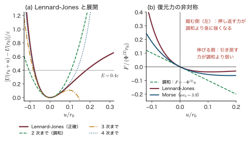
例題30.2 Morse と Lennard-Jones の力定数
(1) Morse ポテンシャル $V=D(1-\ee^{-\alpha u})^2$ の $\Phi^{(2)}$，$\Phi^{(3)}$，$\Phi^{(4)}$ を求めよ．(2) Lennard-Jones ポテンシャルについて，$r_0=2^{1/6}\sigma$ を長さの単位に $\Phi^{(2)}$，$\Phi^{(3)}$，$\Phi^{(4)}$ を求めよ．(3) 固体 Ar（$\varepsilon\simeq10.3\,\mathrm{meV}$，$\sigma\simeq3.40\,\text{Å}$）の $\Phi^{(2)}$ を $\mathrm{N/m}$ で求め，無次元の比 $\abs{\Phi^{(3)}}r_0/\Phi^{(2)}$ を Morse と比べよ．
解答．(1) $y=\alpha u$ とおき，$\ee^{-y}=1-y+\tfrac{y^2}{2}-\tfrac{y^3}{6}+\tfrac{y^4}{24}-\cdots$ を使う．$1-\ee^{-y}=y-\tfrac{y^2}{2}+\tfrac{y^3}{6}-\cdots$ を 2 乗して $y^4$ まで残すと
$$ (1-\ee^{-y})^2=y^2-2\cdot y\cdot\frac{y^2}{2}+\left[\Bigl(\frac{y^2}{2}\Bigr)^2+2\cdot y\cdot\frac{y^3}{6}\right]+\cdots=y^2-y^3+\frac{7}{12}y^4-\cdots $$（$y^4$ の係数は $\tfrac14+\tfrac13=\tfrac7{12}$．）式 \eqref{eq:30-expand} と係数を比べると，$\tfrac12\Phi^{(2)}=D\alpha^2$，$\tfrac16\Phi^{(3)}=-D\alpha^3$，$\tfrac1{24}\Phi^{(4)}=\tfrac7{12}D\alpha^4$ だから
$$ \Phi^{(2)}=2D\alpha^2,\qquad\Phi^{(3)}=-6D\alpha^3,\qquad\Phi^{(4)}=14D\alpha^4 $$(2) $r_0$ を単位にとると $V=\varepsilon(r^{-12}-2r^{-6})$ である（$4\varepsilon[(\sigma/r)^{12}-(\sigma/r)^6]$ に $\sigma^6=r_0^6/2$ を入れた）．$r^{-n}$ の $k$ 階微分は $(-1)^kn(n+1)\cdots(n+k-1)r^{-n-k}$ なので，$r=1$ で
$$ \begin{aligned} \Phi^{(2)}&=\varepsilon(12\cdot13-2\cdot6\cdot7)=\varepsilon(156-84)=72\varepsilon\\ \Phi^{(3)}&=-\varepsilon(12\cdot13\cdot14-2\cdot6\cdot7\cdot8)=-\varepsilon(2184-672)=-1512\varepsilon\\ \Phi^{(4)}&=\varepsilon(12\cdot13\cdot14\cdot15-2\cdot6\cdot7\cdot8\cdot9)=\varepsilon(32760-6048)=26712\varepsilon \end{aligned} $$（いずれも $r_0$ の冪で割った値．）(3) $r_0=2^{1/6}\times3.40\,\text{Å}=3.82\,\text{Å}$ なので
$$ \Phi^{(2)}=\frac{72\times10.3\times10^{-3}\times1.602\times10^{-19}\,\mathrm{J}}{(3.82\times10^{-10}\,\mathrm{m})^2}=0.816\,\mathrm{N/m} $$比は Lennard-Jones で $1512/72=21$，Morse で $6D\alpha^3r_0/2D\alpha^2=3\alpha r_0$ である．Cu の Morse パラメータの一例（$\alpha=1.36\,\text{Å}^{-1}$，$r_0=2.87\,\text{Å}$）では $3\alpha r_0=11.7$．
∎ 3 次の力定数は負で，無次元の比は 10〜20 の大きさになる．これだけ大きくても非調和の効果が小さいのは，掛かる変位 $u$ が $r_0$ の数 % にすぎないからである（30.2.4 項）．Ar の $\Phi^{(2)}\simeq0.8\,\mathrm{N/m}$ は共有結合（数十〜数百 $\mathrm{N/m}$）よりずっと小さく，希ガスの結晶が軟らかく，融点が低いことと合っている．
30.2.2 非調和項をフォノンの言葉で読む — 3 フォノン過程と 4 フォノン過程
第27章 27.4 節で見たように，変位は生成・消滅演算子の和で書ける．1 自由度（質量 $M$，振動数 $\omega$）なら
$$ x=x_0\,(a+a^\dagger),\qquad x_0\equiv\sqrt{\frac{\hbar}{2M\omega}} $$である（$x_0$ は零点振動の振幅．$\langle0|x^2|0\rangle=x_0^2$）．これを 3 次の項に入れると
$$ x^3=x_0^3\,(a+a^\dagger)^3=x_0^3\bigl[a^{\dagger3}+(a^{\dagger2}a+a^\dagger aa^\dagger+aa^{\dagger2})+(a^\dagger a^2+aa^\dagger a+a^2a^\dagger)+a^3\bigr] $$となり，フォノンを 3 個作る項，2 個作って 1 個消す項，1 個作って 2 個消す項，3 個消す項が並ぶ．非調和項は，フォノンの数を変える．これが「フォノンどうしの衝突」の正体である．結晶では波数 $\qq$ と分枝 $\nu$ をまとめて $\lambda=(\qq,\nu)$，$-\lambda=(-\qq,\nu)$ と書き，$A_\lambda\equiv a_\lambda+a^\dagger_{-\lambda}$ とおくと，3 次の項は次の形になる．添字の符号に注意しておく：定義の $\lambda$ を $-\lambda$ に置き換えると $A_{-\lambda}=a_{-\lambda}+a^\dagger_{\lambda}$ である．つまり $A_\lambda$ は「波数 $\qq$ のフォノンを 1 個消す」か「波数 $-\qq$ のフォノンを 1 個作る」演算子で，どちらでも結晶の運動量を $\hbar\qq$ だけ減らす．波数 $\qq_1$ のフォノンを作るのは $A_{-\lambda_1}$ の中の $a^\dagger_{\lambda_1}$ である．
導出：3 次の項をフォノンの演算子で書く（単位胞に原子 1 個の場合）
ステップ 1：変位を代入する．第27章の式（原子 $l$ の変位）$\uu_l=\sum_\lambda\sqrt{\hbar/2NM\omega_\lambda}\,\bm e_\lambda A_\lambda\,\ee^{i\qq\cdot\RR_l}$ を，3 次の項 $U_3=\frac1{3!}\sum\Phi^{(3)}_{l\alpha,l'\beta,l''\gamma}u_{l\alpha}u_{l'\beta}u_{l''\gamma}$ に入れる：
$$ U_3=\frac1{3!}\sum_{\lambda_1\lambda_2\lambda_3}\Biggl[\sum_{ll'l''}\Phi^{(3)}_{l\alpha,l'\beta,l''\gamma}e_{1\alpha}e_{2\beta}e_{3\gamma}\,\ee^{i(\qq_1\cdot\RR_l+\qq_2\cdot\RR_{l'}+\qq_3\cdot\RR_{l''})}\Biggr]\prod_{i=1}^3\sqrt{\frac{\hbar}{2NM\omega_i}}\;A_{\lambda_1}A_{\lambda_2}A_{\lambda_3} $$（$\alpha,\beta,\gamma$ についても和をとる．）
ステップ 2：並進対称性．3 個の原子を同じ格子ベクトル $\TT$ だけずらしても $\Phi^{(3)}$ は変わらない．そこで $\RR_{l'}=\RR_l+\bm r'$，$\RR_{l''}=\RR_l+\bm r''$ と書いて $l$ についての和を先にとると，$\sum_l\ee^{i(\qq_1+\qq_2+\qq_3)\cdot\RR_l}$ が現れる．これは $\qq_1+\qq_2+\qq_3$ が逆格子ベクトル $\GG$ に等しいとき $N$，それ以外は 0 である（第13章）．
ステップ 3：まとめる．残りの和を
$$ \tilde\Phi^{(3)}(\lambda_1,\lambda_2,\lambda_3)\equiv\sum_{\bm r',\bm r''}\Phi^{(3)}_{0\alpha,\bm r'\beta,\bm r''\gamma}e_{1\alpha}e_{2\beta}e_{3\gamma}\ee^{i(\qq_2\cdot\bm r'+\qq_3\cdot\bm r'')} $$と書けば
∎ ここで $\Delta$ は引数が 0 のとき 1，それ以外は 0．$\Psi$ はエネルギーの次元をもち，3 個のフォノンを結ぶ頂点の強さである．$1/\sqrt N$ が付くが，波数の和が $N$ 個あるので，あるフォノンが崩壊する率（30.5 節）は $N$ によらない有限の値になる．4 次の項も同じ手順で $\frac1{4!}\sum\Psi^{(4)}A_{\lambda_1}A_{\lambda_2}A_{\lambda_3}A_{\lambda_4}$（$\Psi^{(4)}\propto\tilde\Phi^{(4)}/N$）と書ける．
$A_\lambda=a_\lambda+a^\dagger_{-\lambda}$ の積を展開すると，たとえば $A_\lambda A_{-\lambda_1}A_{-\lambda_2}$ から $a_{\lambda}a^\dagger_{\lambda_1}a^\dagger_{\lambda_2}$ の項が出る．これは「フォノン $\lambda$ を 1 個消し，$\lambda_1$ と $\lambda_2$ を 1 個ずつ作る」，すなわち 1 個のフォノンが 2 個に分裂する 過程である．$a_{\lambda}a_{\lambda_1}a^\dagger_{\lambda_2}$ の項は 2 個が合体して 1 個になる 過程である．これらを 3 フォノン過程（three-phonon process）という．4 次の項は 2 個 → 2 個，1 個 → 3 個などの 4 フォノン過程 を生む．ファインマン図では，フォノンを波線，3 次の頂点を黒丸 ●，4 次の頂点を黒い正方形 ■ で描く（図30.3．第27章 図27.14 の約束に従い，時間は左から右へ流れる）．3 次の頂点は第27章 図27.14(c) と同じものである．4 次の頂点 ■ は第27章には無く，本章で初めて使う．頂点から出る線（足）の本数が，項に含まれる変位の個数（3 次なら 3 本，4 次なら 4 本）である．
30.2.3 保存則 — N 過程と U 過程，許される組と許されない組
実際に起こる（フォノンの数が本当に変わる）過程では，始状態と終状態のあいだで次の 2 つが保存する．図30.3 の過程は頂点が 1 個だけなので，頂点の前後が始状態と終状態である．分裂 $\lambda\to\lambda_1+\lambda_2$ なら
である．結晶運動量の保存は式 \eqref{eq:30-H3} の $\Delta$ から来る．分裂に効く項は $A_\lambda A_{-\lambda_1}A_{-\lambda_2}$ なので，$\Delta$ の引数の 3 つの波数は $\qq$，$-\qq_1$，$-\qq_2$ であり，$\qq-\qq_1-\qq_2=\GG$，すなわち $\qq=\qq_1+\qq_2+\GG$ となる（$-\GG$ も逆格子ベクトルなので符号は問わない）．エネルギーの保存は Fermi の黄金律のデルタ関数から来る（30.5 節）．$\GG=0$ の過程を N 過程（normal process），$\GG\ne0$ の過程を U 過程（Umklapp process）という（第14章 14.7.3 項）．U 過程では，和が第 1 Brillouin 域からはみ出したぶんを逆格子ベクトルで折り返すので，フォノンの進む向きがほぼ逆転し，フォノン系の運動量 $\hbar\GG$ が格子全体に渡される（図30.4）．熱抵抗を生むのは U 過程だけ である（第14章 定理14.2．30.7 節で使う）．
式 \eqref{eq:30-conserve} の 2 つの条件を同時に満たす組 $(\lambda_1,\lambda_2)$ は，分散関係 $\omega_\nu(\qq)$ の形で決まり，いつもあるとは限らない．1 次元の鎖で調べてみよう（図30.5）．
- 単原子鎖（分枝は音響の 1 本だけ，$\omega(q)=\omega_m\abs{\sin(qa/2)}$）：$q$ のフォノンを $q_1$ と $q-q_1$ に分裂させると，2 個のエネルギーの和は $\omega(q_1)+\omega(q-q_1)$ である．$\abs{\sin}$ は $\abs{\sin(A+B)}\le\abs{\sin A}+\abs{\sin B}$ を満たす（左辺は $\abs{\sin A\cos B+\cos A\sin B}$ で，$\abs{\cos}\le1$）ので，和は常に $\omega(q)$ 以上で，等しくなるのは $q_1=0$ か $q_1=q$（片方が振動数 0 の自明な場合）だけである．$\omega$ は $q$ について周期的なので，$\GG$ を足しても（U 過程でも）同じである．合体も同じ不等式で禁止される．音響の 1 分枝だけの 1 次元鎖では，3 フォノン過程は起こらない．分散が上に凸（ゾーン境界に向かって傾きが減る）なので，分裂すると必ずエネルギーが足りなくなるのである．
- 2 原子鎖（質量 $m_1\ge m_2$，音響と光学の 2 分枝）：$\qq=0$ の光学フォノン（振動数 $\omega_0$）は，振動数 $\omega_0/2$ の音響フォノン $(q,-q)$ の対に分裂できる（運動量の和は 0）．ただし音響分枝の最大値が $\omega_0/2$ 以上のときに限る（例題30.3）．
3 次元の結晶では，縦波音響（LA）と 2 本の横波音響（TA）の分枝があり，速い LA が遅い TA の対に分裂する過程（LA → TA＋TA）や，LA＋TA → LA の合体などが許される．分枝が複数あることと，3 次元の波数の向きの自由度が，保存則を満たす組を作る．どの組がどれだけあるかを数えたものを 3 フォノン過程の位相空間（phase space）といい，これが小さい物質ほどフォノンは長生きする（30.7.4 項の BAs）．
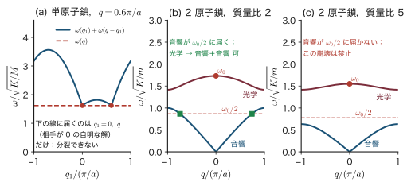
例題30.3 2 原子鎖で光学フォノンが 2 個の音響フォノンに分裂できる条件
質量 $m_1$，$m_2$（$m_1\ge m_2$）の原子が交互に並び，隣どうしがバネ定数 $K$ でつながった 1 次元鎖を考える．$q=0$ の光学フォノンの振動数は $\omega_0=\sqrt{2K(1/m_1+1/m_2)}$，音響分枝の最大値（ゾーン境界）は $\omega_{A,\max}=\sqrt{2K/m_1}$ である（第13章）．(1) 光学フォノンが振動数の等しい 2 個の音響フォノン $(q,-q)$ に分裂できる条件を，質量比で表せ．(2) この模型を GaAs（Ga 69.72，As 74.92），AlAs（Al 26.98），GaN（N 14.01），BAs（B 10.81）に当てはめよ．
解答．(1) エネルギー保存 $\omega_0=2\omega_A(q)$ を満たす $q$ があるためには，$\omega_A(q)$ が 0 から $\omega_{A,\max}$ まで連続に変わるので，$\omega_{A,\max}\ge\omega_0/2$ であればよい．両辺を 2 乗して
$$ \frac{2K}{m_1}\ge\frac14\cdot2K\Bigl(\frac1{m_1}+\frac1{m_2}\Bigr) \;\Longleftrightarrow\;\frac{4}{m_1}\ge\frac1{m_1}+\frac1{m_2} \;\Longleftrightarrow\;\frac{3}{m_1}\ge\frac1{m_2} \;\Longleftrightarrow\;\frac{m_1}{m_2}\le3 $$(2) 質量比は GaAs $74.92/69.72=1.07$，AlAs $74.92/26.98=2.78$，GaN $69.72/14.01=4.98$，BAs $74.92/10.81=6.93$．この模型では GaAs と AlAs で分裂が許され，GaN と BAs では禁止される．
∎ 重い原子と軽い原子の組み合わせでは，音響分枝（重い原子が主に動く）が低く，光学分枝（軽い原子が主に動く）が高いので，両者のあいだに大きな隙間ができ，光学フォノンは 2 個の音響フォノンに分裂できない．実際の 3 次元の結晶では他の崩壊の経路（光学 → 光学＋音響など）もあるが，「音響と光学の隙間が大きいと 3 フォノン過程の位相空間が狭くなる」という傾向は正しい．これが BAs の熱伝導率が高い理由の一つである（30.7.4 項）．
30.2.4 非調和性の強さの目安
3 次の項と 2 次の項の比は $\abs{\Phi^{(3)}}u^3/3\Phi^{(2)}u^2\sim(\abs{\Phi^{(3)}}r_0/\Phi^{(2)})(u/r_0)/3$ である．例題30.2 の比 10〜20 に $u/r_0$ を掛けたものが補正の大きさなので，非調和性の強さの目安は，原子の揺れの大きさと原子間距離の比 $\langle u^2\rangle^{1/2}/a$ である（$a$ は最近接距離）．古典的な高温では $\langle u^2\rangle\propto T$ なので，非調和の効果は温度とともに大きくなる．
この比が約 0.1 に達すると結晶が融ける，という経験則が Lindemann（リンデマン）の融解の目安である．融解は非調和性が極端に強くなった状態だと言える．
例題30.4 Cu の原子の揺れと Lindemann の目安
Debye 模型（$\Theta_D=343\,\mathrm{K}$）と古典的な高温の近似で，Cu（原子量 63.55，最近接距離 $2.556\,\text{Å}$）の原子 1 個の変位の 2 乗平均 $\langle u^2\rangle$（3 成分の和）を求め，$300\,\mathrm{K}$ と融点 $1358\,\mathrm{K}$ での $\langle u^2\rangle^{1/2}/a$ を求めよ．
解答．モード $\lambda$ の古典的な揺れは，等分配則 $\tfrac12M\omega_\lambda^2\langle\abs{Q_\lambda}^2\rangle=\tfrac12k_BT$ から，原子 1 個あたり $k_BT/(NM\omega_\lambda^2)$ である．$3N$ 個のモードについて足すと
$$ \langle u^2\rangle=\frac{k_BT}{NM}\sum_\lambda\frac1{\omega_\lambda^2}=\frac{3k_BT}{M}\Bigl\langle\frac1{\omega^2}\Bigr\rangle $$ここで $\langle1/\omega^2\rangle$ は $3N$ 個のモードについての平均である．Debye 模型の状態密度 $3N\cdot3\omega^2/\omega_D^3$（$0\le\omega\le\omega_D$，第14章）で平均すると
$$ \Bigl\langle\frac1{\omega^2}\Bigr\rangle=\int_0^{\omega_D}\frac{1}{\omega^2}\cdot\frac{3\omega^2}{\omega_D^3}\,\dd\omega=\frac{3}{\omega_D^2},\qquad \langle u^2\rangle=\frac{9k_BT}{M\omega_D^2}=\frac{9\hbar^2T}{Mk_B\Theta_D^2} $$（$\hbar\omega_D=k_B\Theta_D$ を使った）．$M=63.55\,\mathrm{u}=1.055\times10^{-25}\,\mathrm{kg}$ を入れると，$300\,\mathrm{K}$ で
$$ \langle u^2\rangle=\frac{9\times(1.0546\times10^{-34})^2\times300}{1.055\times10^{-25}\times1.381\times10^{-23}\times343^2}\,\mathrm{m^2}=1.75\times10^{-22}\,\mathrm{m^2},\quad \langle u^2\rangle^{1/2}=0.132\,\text{Å} $$$a=2.556\,\text{Å}$ で割って 0.052．$\langle u^2\rangle\propto T$ なので融点では $0.052\times\sqrt{1358/300}=0.110$．
∎ 室温で原子は最近接距離の約 5 %，融点で約 11 % 揺れている．融点の値が Lindemann の目安 0.1 に近いことがわかる．3 次の項と 2 次の項の比 $(\abs{\Phi^{(3)}}r_0/\Phi^{(2)})(u/r_0)/3$ は，例題30.2 の比 10〜20 と $u/r_0\simeq0.05$ から，室温で 0.2〜0.3 程度になる．振動の大きいところでは，ポテンシャルの非対称がはっきり効いていることがわかる．
30.3 熱膨張 I — 非調和振動子の平均位置
30.3.1 古典の絵と古典統計の結果（第14章の再掲）
まず式を使わずに，なぜ温めると伸びるのかを見ておこう（図30.6）．1 本の結合の原子間ポテンシャルは，縮む側が急で伸びる側がゆるい（30.2.1 項）．この井戸の中で原子がエネルギー $E$ で振動すると，振動は 2 つの折り返し点（$U(x)=E$ となる位置）のあいだを往復する．縮む側の壁は急なので，そちらの折り返し点はあまり遠くへ行かない．伸びる側の壁はゆるいので，そちらの折り返し点は遠くまで行く．そのため，エネルギーが大きくなるほど，2 つの折り返し点の中点が伸びる側へずれていく（図30.6(a) の赤い点）．さらに，ゆるい側では復元力が弱いので原子はゆっくり動き，伸びた側に長く滞在する（図30.6(b)）．時間平均の位置は中点よりさらに伸びる側にずれる．温度を上げると振動のエネルギーが平均として大きくなるので，原子間の平均距離が伸びる．これが熱膨張の古典的な絵である．放物線（調和近似）なら左右の壁が対称なので，どれだけ大きく振動しても中点は動かない．
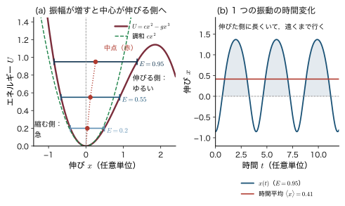
なぜ：ポテンシャルが非対称だと温めて伸びる
原子は「伸びる側に遠くまで行き，そこに長くいる」．温度が高いほど振動が大きくなるので，このずれも大きくなる．ずれの向きを決めるのはポテンシャルの非対称の向き（3 次の項の符号）だけで，縮む側がゆるい奇妙なポテンシャルなら温めると縮む．以下では，このずれを式で求める．
結合 1 本を，伸び $x$ のポテンシャル
$$ U(x)=cx^2-gx^3\qquad(c=\tfrac12M\omega^2\gt0,\ g\gt0) $$で表す（図30.2 の非対称を 3 次まで残したもの）．第14章 14.6.2 項では，Boltzmann 分布 $\ee^{-U/k_BT}$ で平均をとり，$g$ の 1 次までで
$$ \langle x\rangle_{\rm cl}=\frac{3g}{4c^2}\,k_BT $$を導いた（第27章 例題27.7 も同じ計算）．平均位置は温度に比例してずれ，線膨張率は温度によらない一定値になる．しかし低温で熱膨張率が 0 に向かう実験事実は，古典統計では出ない．量子論で計算し直そう．しかも，次に示すように量子論の方がかえって簡単な道がある．
30.3.2 量子論 — 力のつり合いから平均位置を求める
2 次摂動で固有状態を直してから $\langle x\rangle$ を計算することもできるが（シミュレーターの解説ページ §3），もっと見通しのよい道がある．熱平衡では，原子に働く力の平均は 0 である，という事実を使う．
導出：$\langle x\rangle=\dfrac{3g}{2c}\langle x^2\rangle$ と，その熱平均
ステップ 1：力の平均は 0．Heisenberg の運動方程式から，運動量の期待値の時間変化は力の期待値に等しい：$\dfrac{\dd}{\dd t}\langle p\rangle=\Bigl\langle-\dfrac{\partial U}{\partial x}\Bigr\rangle$（量子力学の Ehrenfest の定理）．熱平衡の状態（各固有状態に Boltzmann の重みで分布した状態）は時間によらないので，左辺は 0 である．したがって，近似なしに
$$ \Bigl\langle\frac{\partial U}{\partial x}\Bigr\rangle=0 $$ステップ 2：力を書く．$\partial U/\partial x=2cx-3gx^2$ なので
$$ 2c\langle x\rangle-3g\langle x^2\rangle=0\quad\Longrightarrow\quad\langle x\rangle=\frac{3g}{2c}\langle x^2\rangle $$これも厳密な関係である．右辺の $\langle x^2\rangle$ はすでに $g$ を 1 個含む係数に掛かっているので，$g$ の最低次では 調和振動子の値 を入れればよい．
ステップ 3：調和振動子の $\langle x^2\rangle$．$x=x_0(a+a^\dagger)$，$x_0^2=\hbar/2M\omega$ より $x^2=x_0^2(a^2+a^{\dagger2}+aa^\dagger+a^\dagger a)$．$n$ 個のフォノンの状態での期待値は，$a^2$ と $a^{\dagger2}$ の項は 0，$aa^\dagger=a^\dagger a+1$ なので $\langle n|x^2|n\rangle=x_0^2(2n+1)$．熱平均では $n$ が Bose 分布 $\bar n=1/(\ee^{\hbar\omega/k_BT}-1)$ に置き換わり
$$ \langle x^2\rangle=\frac{\hbar}{2M\omega}(2\bar n+1) $$ここで $y=\hbar\omega/k_BT$ として（分子分母に $\ee^{-y/2}$ を掛けて）
$$ 2\bar n+1=\frac{2}{\ee^{y}-1}+1=\frac{\ee^{y}+1}{\ee^{y}-1}=\frac{\ee^{y/2}+\ee^{-y/2}}{\ee^{y/2}-\ee^{-y/2}}=\coth\frac y2 $$ステップ 4：まとめる．
∎（ステップ 2 の関係は近似なしに成り立つので，最低次の結果もよい精度をもつ．たとえば $\hbar=M=\omega=1$，$g=0.01$ の振動子では，ハミルトニアンを大きな基底で数値的に対角化して得た基底状態の $\langle x\rangle$ は $0.01502$ で，式 \eqref{eq:30-xq} の 0 K の値 $0.015$ とよく合う．）
式 \eqref{eq:30-xq} を 2 つの極限で読む（図30.7）．
- 高温（$k_BT\gg\hbar\omega$）：$\coth(y/2)\simeq2/y=2k_BT/\hbar\omega$ なので $\langle x\rangle\simeq\frac{3g\hbar}{4cM\omega}\cdot\frac{2k_BT}{\hbar\omega}=\frac{3g}{2cM\omega^2}k_BT=\frac{3g}{4c^2}k_BT$（$M\omega^2=2c$）．古典の結果に戻る．
- 低温（$k_BT\ll\hbar\omega$）：$\coth\to1$ なので $\langle x\rangle\to\frac{3g\hbar}{4cM\omega}$．0 K でも平均位置はずれている．零点振動で原子が揺れていれば，その揺れも非対称なポテンシャルを感じて伸びる側に偏るからである．これを 零点振動による膨張（zero-point expansion）という．温度によらない一定のずれなので，熱膨張率には効かない．
熱膨張率は式 \eqref{eq:30-xq} の温度微分である．$\dfrac{\dd}{\dd T}\coth\dfrac{y}{2}=\dfrac{y}{2T}\cdot\dfrac{1}{\sinh^2(y/2)}$，$\sinh^2(y/2)=(\ee^{y}-1)^2/4\ee^{y}$ を使うと
$$ \frac{\dd\langle x\rangle}{\dd T}=\frac{3g\hbar}{4cM\omega}\cdot\frac{\hbar\omega}{2k_BT^2}\cdot\frac{4\ee^{y}}{(\ee^{y}-1)^2} =\frac{3g}{2cM\omega^2}\cdot\underbrace{k_B\frac{y^2\ee^{y}}{(\ee^{y}-1)^2}}_{c_v} =\frac{3g}{4c^2}\,c_v $$となる．$c_v$ は 1 個の振動子の比熱（Einstein の比熱．第14章 14.4 節）である．熱膨張率は比熱に比例する．低温で比熱が $\ee^{-\hbar\omega/k_BT}$ のように消えると，熱膨張率も同じように消える（図30.7(b)）．これは第14章の Grüneisen 則 $\alpha\propto C_V$ の 1 振動子版であり，30.4 節で結晶に一般化する．
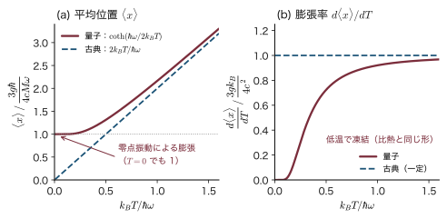
例題30.5 1 本の結合で線膨張率を見積もる
結合 1 本を Morse ポテンシャル $V=D(1-\ee^{-\alpha u})^2$ で表し，$D=0.5\,\mathrm{eV}$，$\alpha=1.5\,\text{Å}^{-1}$，$r_0=2.5\,\text{Å}$ とする（典型的な金属結合の値の例）．高温の古典統計で，線膨張率 $\alpha_{\rm lin}=\frac{1}{r_0}\dd\langle x\rangle/\dd T$ を求めよ．
解答．例題30.2 の展開から $c=\tfrac12\Phi^{(2)}=D\alpha^2$，$g=-\tfrac16\Phi^{(3)}=D\alpha^3$．高温では $\dd\langle x\rangle/\dd T=3gk_B/4c^2$ なので
$$ \alpha_{\rm lin}=\frac{1}{r_0}\cdot\frac{3D\alpha^3k_B}{4D^2\alpha^4}=\frac{3k_B}{4D\alpha r_0} =\frac{3\times8.617\times10^{-5}\,\mathrm{eV/K}}{4\times0.5\,\mathrm{eV}\times1.5\,\text{Å}^{-1}\times2.5\,\text{Å}}=3.4\times10^{-5}\,\mathrm{K^{-1}} $$∎ 結合エネルギー $D$ が小さく（結合が弱く），ポテンシャルの曲がり $\alpha$ がゆるいほどよく膨張する．値は金属の実測（$1\sim2\times10^{-5}\,\mathrm{K^{-1}}$）と同じ桁である．ただし結晶では，1 本の結合の伸び縮みだけでなく，原子が多くの結合に同時に引かれていることや，結合に垂直な揺れが結合を縮める効果（30.4.4 項）も効くので，1 本の結合の見積もりは桁の目安にとどまる．融点の高い（$D$ の大きい）物質ほど熱膨張が小さい，という経験則の理由もこの式からわかる．
例題30.6 零点振動による膨張はどれくらいか
(1) 式 \eqref{eq:30-xq} で，0 K の零点振動による膨張が，古典統計の熱膨張 $\frac{3g}{4c^2}k_BT$ と等しくなる温度 $T^*$ を求めよ．(2) Si の光学フォノン（$\hbar\omega=64.5\,\mathrm{meV}$）の振動数をもつ振動子について $T^*$ を求めよ．(3) 同じ物質の同位体（質量 $M$ だけが違う）で，零点振動による膨張は $M$ にどう依存するか．
解答．(1) $\frac{3g\hbar}{4cM\omega}=\frac{3g}{4c^2}k_BT^*$ を解いて，$c=\tfrac12M\omega^2$ を使うと $k_BT^*=\frac{c\hbar}{M\omega}=\frac{\hbar\omega}{2}$，すなわち $T^*=\hbar\omega/2k_B$．(2) $T^*=\dfrac{0.0645\,\mathrm{eV}}{2\times8.617\times10^{-5}\,\mathrm{eV/K}}$ $=374\,\mathrm{K}$．(3) $c$ と $g$ は電子が決めるポテンシャルの形なので同位体で変わらない．$\omega=\sqrt{2c/M}\propto M^{-1/2}$ なので，零点振動による膨張 $\frac{3g\hbar}{4cM\omega}\propto\frac{1}{M\cdot M^{-1/2}}=M^{-1/2}$．
∎ 高い振動数のモードでは，零点振動による膨張は室温の熱膨張と同じ大きさで，無視できない．重い同位体ほど零点振動が小さく，格子定数がわずかに小さい．$^{13}$C のダイヤモンドの格子定数が $^{12}$C のものよりわずかに小さいことは，この効果の例である（相対的な差は $10^{-4}$ 程度）．第一原理計算で格子定数を比べるときも，0 K の静的な計算は零点振動の分だけ実測より小さくなることがある．
30.3.3 図で読む — tadpole の上半分
ここから先で使う図の部品を，まとめて説明しておく（図30.8）．第27章 27.4 節のファインマン図は，頂点が 1〜2 個で，左から右へ時間の順に読む図だった．本章ではそれに加えて，次の 2 つの部品を使う．
- 輪：1 つの頂点から出た 2 本の足を，同じ頂点に戻してつないだもの．式の上では，$x$ を 2 個ペアにして，その平均 $\langle x^2\rangle$ に置き換えることにあたる．たとえば 3 次の項の $x^3=x\cdot x\cdot x$ のうち 2 個をペアにすると $3\langle x^2\rangle x$ が残る（ペアにする 2 個の選び方が 3 通り）．$\langle x^2\rangle$ は「同じ場所，同じ時刻でフォノンを作って消す」揺れの大きさ（零点振動と熱的なフォノンの和）なので，輪は時間の順には読まない．輪は「その場所の揺れの大きさ」という 1 つの数を表す絵である．この置き換えは 30.6.2 項の導出 1（$x^4\to6\langle x^2\rangle x^2$）や 30.8.2 項でも使う．
- 尾：振動数 0，波数 0 の線．時間によらない一様な変位，すなわち平均位置の静的なずれを表す．尾の先の白丸が，ずれた平均位置である．
この 2 つの部品と頂点 ●，■ を組み合わせると，本章で使う 4 つの図（1 点の図，tadpole，loop，bubble）ができる（図30.8(c)）．bubble は第27章 図27.15(c) と同じ形で，時間の順に読める（1 個のフォノンが本当に 2 個に分かれてまた 1 個に戻る）．輪や尾を含む図（1 点の図，tadpole，loop）では，時間の順に読むのは左右の外線（観測するフォノン）だけで，輪と尾は「平均の量」を表す．
式 \eqref{eq:30-xq} の 3 つの因子 $\langle x\rangle=\dfrac{1}{2c}\times3g\times\langle x^2\rangle$ は，それぞれ図の部品として読める（図30.9(a)）．
- 輪（同じ頂点に戻る線．図30.8(b)）：揺れの 2 乗平均 $\langle x^2\rangle\propto2\bar n+1$．零点振動（1）と熱的なフォノン（$2\bar n$）の和で，いつも正．
- 頂点 ●：3 次の項 $-gx^3$．揺れ $x$ の符号によらず，力 $-\partial(-gx^3)/\partial x=3gx^2$ を外向きに与える．輪とつなぐと平均の力 $3g\langle x^2\rangle$ になる．
- 尾（1 本だけ出ている，振動数 0 の線）：平均の力に対するバネの静的な応答 $1/2c$（バネ定数の逆数）．いつも正．
3 つを掛けたものが平均位置のずれ（白丸）である．輪と尾はいつも正なので，膨張するか縮むかは頂点の符号だけで決まる．1 本の結合では頂点は「伸びる側がゆるい」向きに決まっているので，最低次では必ず膨張する．縮む（負の熱膨張）ためには，別の種類の頂点（結合に垂直な揺れが両端を引き寄せる頂点）が要る（30.4.4 項）．
この「尾＋頂点＋輪」の図は，振動数の変化を表す tadpole（おたまじゃくし）の図（図30.9(b)）の上半分である．tadpole の図は，「平均位置がずれる（上半分）→ ずれた位置ではバネの曲がりが違う（下の頂点）→ 振動数が変わる」と読む．これは 30.6 節で計算する．
動かして確かめる：1 点の図の輪・頂点・尾と，平均位置の温度変化
このタブでは，図30.9(a) の 1 点の図を部品ごとに動かせる．開いた直後は「(b) 横揺れ（回転）」が選ばれていて，白丸は縮む側へ動く（これは 30.4.4 項の張力の模型である）．本節の模型を見るには，まず右の「どのモードが輪に入るか」の 2 枚のカードのうち 「(a) 結合の伸縮」 を押す．次に「温度 $t=k_BT/\hbar\omega$」のつまみ（または 0，0.5，1，2，3 のボタン）で温度を上げると，輪が太り，平均位置（白丸）が伸びる側へずれていく．「非調和性 $\xi$」のつまみが本章の $g$ にあたる（シミュレーターは $-\xi x^3$ と書き，$\hbar=m=\omega=1$ の単位で無次元にしている）．下の温度のグラフの実線が式 \eqref{eq:30-xq} の量子の曲線，破線が古典の直線である．下の原子の雲の動画は開いたときから動いている（止めるには「⏸ 一時停止」を押す）．比べるために，最後に「(b) 横揺れ（回転）」に戻すと，同じ輪から逆向き（収縮）の力が出ることがわかる．
枠の中の説明には「松原振動数」「縮約」「自己エネルギー」「教科書の図 E.1」（姉妹編『線形応答理論』付録E の図）など，本書でまだ扱っていない言葉が出てくるが，ここでは読み飛ばしてよい．「縮約」は本節の「$x$ を 2 個ペアにして平均に置き換える」こと，「松原振動数 $\omega_n=0$ の線」は本節の「振動数 0 の尾」のことである．
補足：もっと知りたい読者へ — 図の規則で同じ計算をする
本節では力のつり合いで計算したが，同じ結果は「図の各部品に決まった式を割り当てて掛け合わせる」規則（Feynman の規則）でも得られる．その規則は Green 関数を使って導かれる．姉妹編『線形応答理論』付録E E.1 節（熱膨張は 1 点の図である）と第14章 14.8 節（3 つの図の物理的な意味），シミュレーターの解説ページ §4 に，本節の式 \eqref{eq:30-xq} を図の規則で再現する手順がある．
30.4 熱膨張 II — 準調和近似と Grüneisen の関係式
30.4.1 準調和近似 — 体積で振動数が変わる調和振動子
30.3 節の 1 本の結合の計算を，結晶全体に広げたい．結晶の $3N$ 個のモードそれぞれについて 3 次の頂点を数えるのは大変なので，次の近似を使う．
定義：準調和近似（quasi-harmonic approximation, QHA）
結晶の体積 $V$ を決めるごとに，その体積で調和近似のフォノン計算を行い，振動数 $\omega_\lambda(V)$ を得る．各体積では互いに独立な調和振動子の集まりとして自由エネルギーを計算し，非調和性は「振動数が体積に依存すること」だけを通じて取り込む．
第14章 14.6 節で示したように，Helmholtz 自由エネルギーは
である（$U_0(V)$ は原子を止めたときの静的なエネルギー）．与えられた温度で $F$ を最小にする体積が，その温度の平衡体積である（圧力 0 のとき）．図30.10 は，Einstein 模型（全モードが同じ $\omega(V)=\omega_0(V/V_0)^{-\gamma}$）で $F(V,T)$ を描いたものである．第 2 項（零点振動）のために 0 K でも最小の位置が静的な最小 $V_0$ からずれ（零点振動による膨張），温度とともに最小が大きい体積へ移っていく．$\omega$ が体積とともに下がる（$\gamma\gt0$）ので，大きい体積ほど振動の自由エネルギーが下がり，温度が上がるほどその効果が強いからである．
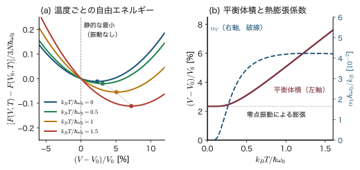
30.4.2 Grüneisen の関係式をモードに分解する
第14章 14.6.4 項の導出は，最後に「すべての $\gamma_i$ を共通の $\gamma$ で近似する」ところで簡単化した．ここではモードごとの値を残したまま進める．
導出：$\alpha_V=\dfrac{1}{B_TV}\sum_\lambda\gamma_\lambda c_\lambda$
ステップ 1：Mie–Grüneisen の状態方程式（第14章の再掲）．式 \eqref{eq:30-FQHA} を $V$ で微分し，モード Grüneisen 定数
を使うと，圧力は $P=-\dfrac{\dd U_0}{\dd V}+\dfrac1V\sum_\lambda\gamma_\lambda\varepsilon_\lambda$ になる．$\varepsilon_\lambda=\hbar\omega_\lambda(\bar n_\lambda+\tfrac12)$ はモード $\lambda$ の平均エネルギーである（第14章 14.6.4 項のステップ 1〜2）．
ステップ 2：体積一定で温度微分．体積を固定すると $U_0$ と $\gamma_\lambda$ は温度によらないので
$$ \left(\frac{\partial P}{\partial T}\right)_V=\frac1V\sum_\lambda\gamma_\lambda\frac{\partial\varepsilon_\lambda}{\partial T}=\frac1V\sum_\lambda\gamma_\lambda c_\lambda $$ここで $c_\lambda=\partial\varepsilon_\lambda/\partial T=k_By_\lambda^2\ee^{y_\lambda}/(\ee^{y_\lambda}-1)^2$（$y_\lambda=\hbar\omega_\lambda/k_BT$）はモード $\lambda$ の比熱である．
ステップ 3：膨張率へ．例題30.1 で示した $(\partial P/\partial T)_V=\alpha_VB_T$ を使って
∎ $C_V=\sum_\lambda c_\lambda$ は結晶全体の定積比熱である．
式 \eqref{eq:30-gruneisen} の読み方が本節の要点である．
- 熱膨張は，各モードの「膨らませる力」$\gamma_\lambda$ を，そのモードの比熱 $c_\lambda$ で重みづけて足したもの．温度が低いと振動数の低いモードしか励起されず（$c_\lambda$ が 0 でない），高温では全モードが等しい重み $k_B$ をもつ．したがって平均の $\gamma$ は温度によって変わりうる．
- 30.3 節の 1 振動子の結果 $\dd\langle x\rangle/\dd T=(3g/4c^2)c_v$ は，この式の 1 項にあたる．$\gamma_\lambda$ は 3 次の頂点の強さを，$1/B_TV$ は尾（結晶全体のバネの応答）を表す．30.3.3 項の「輪と尾は正，符号は頂点で決まる」は，ここでは「$c_\lambda\gt0$，$B_TV\gt0$ なので，符号は $\gamma_\lambda$ で決まる」になる．
- $C_V\propto T^3$ の低温では $\alpha_V$ も $T^3$ に比例して消える（Grüneisen 則，第14章）．
例題30.7 Grüneisen の関係で Cu の線膨張率を予言する
Cu の $\gamma=2.0$（温度によらないとする），$B_T=137\,\mathrm{GPa}$，モル体積 $7.11\times10^{-6}\,\mathrm{m^3/mol}$，$\Theta_D=343\,\mathrm{K}$ として，Debye 模型の比熱を使って $300\,\mathrm{K}$ と $50\,\mathrm{K}$ の線膨張率 $\alpha=\alpha_V/3$ を求めよ．Debye 比熱は $C_V=3R\cdot3(T/\Theta_D)^3\int_0^{\Theta_D/T}\frac{x^4\ee^x}{(\ee^x-1)^2}\dd x$（$R=8.314\,\mathrm{J\,mol^{-1}K^{-1}}$）である．
解答．積分を数値で求めると，$C_V(300\,\mathrm{K})=23.4\,\mathrm{J\,mol^{-1}K^{-1}}$，$C_V(50\,\mathrm{K})=4.98\,\mathrm{J\,mol^{-1}K^{-1}}$ である．式 \eqref{eq:30-gruneisen} を 1 mol あたりで使い，3 で割って
$$ \begin{aligned} \alpha(300\,\mathrm{K})&=\frac{\gamma C_V}{3B_TV}=\frac{2.0\times23.4}{3\times1.37\times10^{11}\times7.11\times10^{-6}}\,\mathrm{K^{-1}}\\ &=\frac{46.8}{2.922\times10^{6}}\,\mathrm{K^{-1}}=1.60\times10^{-5}\,\mathrm{K^{-1}} \end{aligned} $$ $$ \alpha(50\,\mathrm{K})=\frac{2.0\times4.98}{2.922\times10^{6}}\,\mathrm{K^{-1}}=3.4\times10^{-6}\,\mathrm{K^{-1}} $$∎ 室温の値は実測の $1.65\times10^{-5}\,\mathrm{K^{-1}}$ とよく合う（$\gamma$ はもともと室温の実測値から決めた値なので，これは整合性の確認である）．予言の意味をもつのは温度依存性で，$50\,\mathrm{K}$ では比熱と同じ割合（約 $1/4.7$）で小さくなる．
30.4.3 Grüneisen 定数と 3 次の力定数
$\gamma_\lambda$ は「体積を変えると振動数がどれだけ変わるか」であり，体積を変えるとバネ定数が変わるのは 3 次の項のためである．1 次元の鎖で式にしておこう．
導出：1 次元の単原子鎖の $\gamma=-a\Phi^{(3)}/2\Phi^{(2)}$
ステップ 1：伸ばした鎖のバネ定数．隣どうしの間隔 $a$ の鎖を一様に伸ばして間隔を $a+\delta$ にする．その状態のまわりで原子を揺らしたときのバネ定数は，ポテンシャルの 2 階微分を $r=a+\delta$ で評価したものである．式 \eqref{eq:30-expand} を微分すると $V''(a+\delta)=\Phi^{(2)}+\Phi^{(3)}\delta+\cdots$．すなわち
$$ K(a+\delta)\simeq\Phi^{(2)}+\Phi^{(3)}\delta $$ステップ 2：振動数の変化．単原子鎖の分散は $\omega(q)=2\sqrt{K/M}\abs{\sin(qa/2)}$ である．周期境界条件で許される波数は $q=2\pi m/(Na)$（$m$ は整数）なので，鎖を伸ばしても各モードの $qa=2\pi m/N$ は変わらない．したがって全モードで $\omega\propto\sqrt K$ で，
$$ \frac{\dd\ln\omega}{\dd\delta}=\frac{1}{2}\frac{\dd\ln K}{\dd\delta}=\frac{\Phi^{(3)}}{2\Phi^{(2)}} $$ステップ 3：Grüneisen 定数．1 次元の「体積」は長さ $L=Na$ で，$\dd\ln L=\dd\delta/a$ だから
$$ \gamma_{\rm 1D}=-\frac{\dd\ln\omega}{\dd\ln L}=-a\,\frac{\dd\ln\omega}{\dd\delta}=-\frac{a\,\Phi^{(3)}}{2\Phi^{(2)}} $$∎ $\Phi^{(3)}\lt0$ なので $\gamma_{\rm 1D}\gt0$ である．Grüneisen 定数は，3 次と 2 次の力定数の比そのもの である．
3 次元の結晶で，すべての結合が同じように伸び，すべての振動数が結合のバネ定数の平方根に比例すると仮定すると，$V\propto a^3$ より $\dd\ln V=3\,\dd\ln a$ なので，$\gamma\simeq-a\Phi^{(3)}/6\Phi^{(2)}$ と 1/3 になる．Morse ポテンシャルでは $\Phi^{(3)}/\Phi^{(2)}=-3\alpha$ なので $\gamma\simeq\alpha r_0/2$ で，Cu の Morse パラメータの一例（$\alpha=1.3588\,\text{Å}^{-1}$，$r_0=2.866\,\text{Å}$）では $1.95$ となり，実測の約 2.0 に近い．ただしこの見積もりは，結合に垂直な揺れ（次項）や，結合の向きの変化を無視した粗いものである．
| 物質 | NaCl | Cu | Al | ダイヤモンド | Si |
|---|---|---|---|---|---|
| $\gamma$ | 1.5 | 2.0 | 2.2 | 約 0.7〜1 | 0.46 |
| 特徴 | イオン結晶 | 金属：「$\gamma\approx2$」の経験則 | 共有結合：横波の負の $\gamma_\lambda$ が平均を下げる | ||
30.4.4 負の熱膨張 — $\gamma_\lambda\lt0$ のモード
式 \eqref{eq:30-gruneisen} から，$\gamma_\lambda\lt0$ のモードが比熱の重みで勝てば，結晶は温めると縮む．$\gamma_\lambda\lt0$ とは「体積を増やすと振動数が上がる」ことで，その典型は結合に垂直な横揺れである（図30.11）．
導出：張った弦の横振動は，伸ばすと振動数が上がる
ステップ 1：模型．2 個の陽イオン M（固定）のあいだに酸素 O（質量 $m$）があり，M–O の結合は自然長 $d_0$，バネ定数 $k$ とする．M と O の距離（水平）を $L$（$\ge d_0$）とする．O を結合に垂直に $u$ だけずらすと，結合の長さは $s=\sqrt{L^2+u^2}\simeq L+u^2/2L$ になる．
ステップ 2：横の復元力．2 本の結合のエネルギーは $2\cdot\tfrac12k(s-d_0)^2$．$s-d_0=(L-d_0)+u^2/2L$ を入れて $u^2$ の項まで残すと
$$ \begin{aligned} k\Bigl[(L-d_0)+\frac{u^2}{2L}\Bigr]^2&=k(L-d_0)^2+2k(L-d_0)\cdot\frac{u^2}{2L}+O(u^4)\\ &=k(L-d_0)^2+\frac{k(L-d_0)}{L}\,u^2+O(u^4) \end{aligned} $$これを $\tfrac12K_\perp u^2$ と比べると，横のバネ定数は $K_\perp=2k(L-d_0)/L=2F/L$ である．$F=k(L-d_0)$ は結合の張力である．結合の曲げに対する復元力 $\kappa_b$ もあるとして，横振動の振動数は
$$ \omega_\perp^2=\frac{\kappa_b+2F/L}{m} $$ステップ 3：伸ばすと．結晶を膨張させて $L$ を増やすと，張力 $F=k(L-d_0)$ が増えるので（$2F/L=2k(1-d_0/L)$ も増える），$\omega_\perp$ が上がる．すなわち $\gamma_\perp\lt0$．
ステップ 4：揺れると縮む．逆に，結合の長さ $s$ をほぼ一定に保ったまま O が $u$ だけ横に揺れると，M と O の水平距離は $\sqrt{s^2-u^2}\simeq s-u^2/2s$ に縮む．揺れの 2 乗平均 $\langle u^2\rangle$ の分だけ両端が引き寄せられる．温めると $\langle u^2\rangle$ が増えるので結晶が縮む．
∎ ギターの弦を強く張ると音が高くなる（$\gamma\lt0$）こと，弦をはじくと両端を引く力がかかること，の 2 つは同じ幾何学の表と裏である．図の言葉では，この横揺れの頂点は「輪（$\langle u^2\rangle$）が両端に内向きの平均の力を与える」頂点で，30.3 節の結合の伸縮の頂点と符号が逆である．
実在の負の熱膨張（negative thermal expansion）の例を挙げる．
- $\mathrm{ZrW_2O_8}$：約 $0.3\,\mathrm{K}$ から $1050\,\mathrm{K}$ という広い温度域で等方的に縮み，線膨張率は約 $-9\times10^{-6}\,\mathrm{K^{-1}}$（Mary ら 1996）．$\mathrm{ZrO_6}$ 八面体と $\mathrm{WO_4}$ 四面体が頂点の酸素を共有した骨格で，多面体がほとんど変形せずに回転する低振動数のモード（剛体ユニットモード，rigid unit mode）が，図30.11(b) の横揺れの役をする．
- $\mathrm{ScF_3}$：$\mathrm{ReO_3}$ 型の単純な立方晶で，Sc–F–Sc の F の横揺れが負の熱膨張を生む．構造が単純なので，第一原理計算と実験の比較によく使われる．
- Si，Ge：Brillouin 域の境界付近の横波音響モードが $\gamma_\lambda\lt0$ をもち，Si では約 $18\,\mathrm{K}$ から $120\,\mathrm{K}$ の範囲で $\alpha\lt0$ になる（第14章 14.6.5 項）．
- グラフェン：面に垂直なたわみの振動（膜の横揺れ）が強く $\gamma_\lambda\lt0$ をもつので，面内の格子定数は広い温度範囲で温めると縮む．
- インバー（Fe–Ni 合金）：室温付近の熱膨張がほぼ 0 だが，その機構は格子振動ではなく磁気（温度で磁化が減ると体積が縮む磁気体積効果）で，本節の機構とは別である．
図30.12 は，負の $\gamma$ をもつ低振動数の横揺れモード A と，正の $\gamma$ をもつ高振動数の伸縮モード B の 2 つだけの模型で，式 \eqref{eq:30-gruneisen} の和を描いたものである．低温では振動数の低い A だけが励起されるので縮み，高温では数の多い B が勝って膨張する．
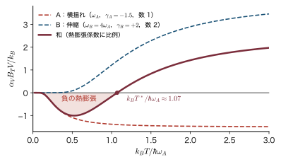
例題30.8 負の熱膨張が現れる条件
図30.12 の 2 モード模型で，(1) 十分低温で $\alpha_V$ の符号を決めるものは何か．(2) 十分高温で $\alpha_V$ の符号を決めるものは何か．(3) $\gamma_A=-1.5$，$\omega_B=4\omega_A$，数の比 1：2 のとき，高温でも縮み続けるための $\gamma_B$ の条件を求めよ．
解答．(1) 低温（$k_BT\ll\hbar\omega_A$）では $c_\nu\simeq k_B(\hbar\omega_\nu/k_BT)^2\ee^{-\hbar\omega_\nu/k_BT}$ である．B の比熱と A の比熱の比は $(\omega_B/\omega_A)^2\ee^{-(\omega_B-\omega_A)\hbar/k_BT}=16\,\ee^{-3\hbar\omega_A/k_BT}$ で，低温では非常に小さいので，和は A の項で決まり，符号は $\gamma_A$（負）である．(2) 高温では $c_\nu\to k_B$ なので，$\alpha_V\to\frac{k_B}{B_TV}\sum_\nu n_\nu\gamma_\nu$．符号は $\sum n_\nu\gamma_\nu$ で決まる．(3) $1\times(-1.5)+2\gamma_B\lt0$，すなわち $\gamma_B\lt0.75$．
∎ 負の $\gamma$ をもつモードが 振動数の低い側にある と，低温で負の熱膨張が現れやすい（Si の場合）．全温度で縮むには，負の $\gamma$ のモードが数でも重みでも勝つ必要がある（$\mathrm{ZrW_2O_8}$）．符号が変わる温度 $T^*$ は $\sum n_\nu\gamma_\nu c_\nu(T^*)=0$ を解いて求める（図30.12 では $k_BT^*\simeq1.07\hbar\omega_A$）．
この 2 モード模型は，シミュレーターの「全モードで足す」のタブで，$\gamma$，振動数，重みを動かして試せる（thermal-expansion-simulator の ② 全モードで足す →）．Grüneisen 定数，体積弾性率と熱膨張の関係は solid-eos-simulator の ② 膨張を決めるのは硬さ → でも確かめられる．
30.4.5 第一原理計算での手順
準調和近似による熱膨張の第一原理計算は，第14章 14.6.5 項の補足に書いた手順で行う．要点は次のとおりである．(1) 平衡体積のまわりの 7〜11 点程度の体積で構造を最適化し，静的なエネルギー $U_0(V)$ を得る．(2) 各体積でフォノン計算を行い $\omega_\lambda(V)$ を得る．(3) 式 \eqref{eq:30-FQHA} で $F(V,T)$ を作り，各温度で $V$ について最小化する（状態方程式で内挿する）．(4) $V(T)$ を微分して $\alpha_V(T)$ を得る．同時に，$\gamma_\lambda$ をモードごとに求めて式 \eqref{eq:30-gruneisen} の和を分解すれば，どのモードが膨張・収縮に効いているかがわかる．phonopy には，この手順を行う機能がある（Togo と Tanaka 2015）．
注意：準調和近似が使えない場合
準調和近似は「各体積では調和振動子」とみなすので，体積を一定にしたときの非調和性（フォノンどうしの衝突による振動数の変化と線幅，30.5〜30.6 節）を含まない．融点に近い高温や，非調和性の強い物質（4 次の項が大きい物質，虚数振動数を有するフォノンをもつ物質，30.8 節）では，準調和近似の熱膨張は実測からずれる．ある体積で虚数振動数が出たら，その体積では式 \eqref{eq:30-FQHA} 自体が意味をもたない．
30.4.6 弾性定数の温度変化 — 高温で軟らかくなる
表30.1 の最後の行の「弾性定数が温度によらない」も，準調和近似で解決する．固体を温めると，体積弾性率などの弾性定数はふつう温度とともに少しずつ下がる（軟らかくなる）．たとえば Cu の等温体積弾性率は，0 K の約 $142\,\mathrm{GPa}$ から室温の約 $137\,\mathrm{GPa}$ へ，3〜4 % 下がる．調和近似では力定数 $\Phi^{(2)}$ が定数なので，この変化は出ない．原因は，熱膨張で原子間の距離が伸びると，ポテンシャルの曲がりが小さい（ゆるい）側に移ることである．これも 3 次の項の効果である．
導出：$B_T(T)\simeq B_0\bigl[1-B_0'\,\Delta V(T)/V_0\bigr]$
ステップ 1：体積弾性率を自由エネルギーで書く．$P=-(\partial F/\partial V)_T$ なので，等温体積弾性率は
$$ B_T=-V\Bigl(\frac{\partial P}{\partial V}\Bigr)_T=V\frac{\partial^2F}{\partial V^2} $$である．式 \eqref{eq:30-FQHA} の $F=U_0(V)+F_{\rm vib}(V,T)$ を入れ，その温度の平衡体積 $V(T)=V_0+\Delta V(T)$ で評価する．
ステップ 2：静的な部分．$V_0$ は $U_0$ の最小の位置で，静的な体積弾性率は $B_0=V_0U_0''(V_0)$ である（$'$ は $V$ での微分）．$U_0''$ を $V_0$ のまわりで $\Delta V$ の 1 次まで展開すると
$$ V\,U_0''(V)\simeq(V_0+\Delta V)\bigl[U_0''(V_0)+U_0'''(V_0)\,\Delta V\bigr]\simeq B_0+\bigl[U_0''(V_0)+V_0U_0'''(V_0)\bigr]\Delta V $$ステップ 3：3 次の項を $B_0'$ で表す．体積弾性率の圧力微分 $B_0'\equiv\dd B/\dd P$（$P=0$ での値）を使う．静的な $B(V)=VU_0''(V)$ を $V$ で微分すると $\dd B/\dd V=U_0''+VU_0'''$，また $\dd P/\dd V=-B/V$ だから
$$ B_0'=\frac{\dd B/\dd V}{\dd P/\dd V}\bigg|_{V_0}=-\frac{V_0}{B_0}\bigl[U_0''(V_0)+V_0U_0'''(V_0)\bigr] $$これをステップ 2 に入れると，静的な部分は $B_0-B_0'B_0\,\Delta V/V_0$ になる．
ステップ 4：振動の部分．残りの $V\,\partial^2F_{\rm vib}/\partial V^2$ は，体積を固定したまま温度を上げたときの熱圧力の体積変化である．高温の古典極限で全モードが共通の $\gamma$ をもち，$\gamma$ が体積にほぼ比例する典型的な場合には，この項は小さい（図30.13 の緑の一点鎖線）．これを無視して
∎ ふつうの固体では $B_0'\approx4\sim6$ で正なので，熱膨張（$\Delta V\gt0$）とともに体積弾性率は下がる．高温では $\Delta V\propto T$ なので，弾性定数は温度に比例して下がる．
$B_0'\gt0$（圧縮すると硬くなる）ことと，$\Phi^{(3)}\lt0$（伸びる側がゆるい）ことは，同じポテンシャルの非対称の表と裏である．Cu では 0 K から室温までの線膨張が約 $0.33\,\%$（体積で約 1 %），$B_0'\approx5$ なので，式 \eqref{eq:30-BT} から約 5 % の軟化が見積もられ，実測の 3〜4 % と同じ程度である．断熱体積弾性率は，例題30.1 で見たように $B_S=B_T\,C_p/C_V=B_T(1+\alpha_V\gamma T)$ なので，等温の値より少し大きく，温度とともに両者の差も開く．音速や超音波の測定で得られるのは $B_S$ の方である．
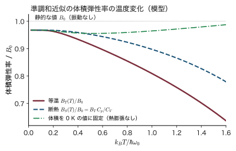
個々の弾性定数（$C_{11}$，$C_{44}$ など）も同じ理由で高温で下がる．準調和近似に入らない体積一定の非調和性（4 次の項など，30.6 節）も弾性定数を変えるが，多くの物質で主な原因は熱膨張である．逆に，石英ガラスのように温めると硬くなる物質もあり，負の $\gamma_\lambda$ のモードや構造の特殊性を反映している．
30.5 フォノンの寿命と線幅
30.5.1 現象 — スペクトルの線には幅がある
Si の結晶に可視のレーザー光を当てて散乱光の分光をすると，入射光から $520\,\mathrm{cm^{-1}}$ だけ低い波数に，$\Gamma$ 点の光学フォノンによる Raman 線が現れる（第34章）．装置の分解能の分を差し引いても，この線の半値全幅は室温で約 $3\,\mathrm{cm^{-1}}$，液体ヘリウム温度でも $1\,\mathrm{cm^{-1}}$ 台（1.2〜1.5 cm⁻¹ 程度．測定によって幅がある）ある．温度を上げると線は太くなり，低い波数へずれる．中性子や X 線の非弾性散乱で測るフォノンのピークにも，同じように幅がある．
第27章 27.5 節で見たように，スペクトルの線の幅は，その状態の寿命の逆数 である．フォノンを 1 個作っても，それは有限の時間のうちに別のフォノンへ崩壊してしまう．振幅が $\ee^{-\Gamma t}$ で減衰する振動 $\ee^{-\Gamma t}\cos\omega_0t$ を Fourier 変換すると，中心 $\omega_0$，半値半幅 $\Gamma$ の Lorentz 型の線になる（第27章 27.5.3 項の導出 4．図30.14）．フォノンの数（強度）は振幅の 2 乗なので $\ee^{-2\Gamma t}$ で減り，寿命は
である．Raman 分光では線の幅を波数（$\mathrm{cm^{-1}}$）の半値全幅 $\tilde\nu_{\rm FWHM}$ で報告する．角振動数と波数は $\omega=2\pi c\tilde\nu$（$c$ は光速）で結ばれるので，$2\Gamma=2\pi c\,\tilde\nu_{\rm FWHM}$，したがって
である（$1/(2\pi\times2.998\times10^{10}\,\mathrm{cm/s})$ $=5.31\times10^{-12}\,\mathrm{s\,cm^{-1}}$）．
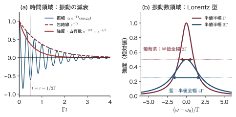
例題30.9 Si の Raman 線の幅から寿命を求める（低温と室温）
Si の光学フォノンの Raman 線の半値全幅を，低温（約 $5\,\mathrm{K}$）で $1.4\,\mathrm{cm^{-1}}$（図30.16(b) の模型の値），室温で $3\,\mathrm{cm^{-1}}$ とする．(1) それぞれの寿命 $\tau$ を求めよ．(2) 低温の値について $\Gamma$ を meV で表し，フォノンのエネルギー $64.5\,\mathrm{meV}$ との比を求めよ．
解答．(1) 式 \eqref{eq:30-taucm} より，低温で $\tau=5.31/1.4\,\mathrm{ps}=3.8\,\mathrm{ps}$，室温で $5.31/3\,\mathrm{ps}=1.8\,\mathrm{ps}$（第27章 例題27.17 と同じ）．(2) $1\,\mathrm{meV}=8.0655\,\mathrm{cm^{-1}}$ なので，半値全幅 $1.4\,\mathrm{cm^{-1}}=0.174\,\mathrm{meV}$，半値半幅 $\hbar\Gamma=0.087\,\mathrm{meV}$．比は $0.087/64.5=1.3\times10^{-3}$．
∎ 低温でもフォノンは数 ps で崩壊する．0 K では熱的なフォノンがいないのに崩壊するのは，自発的な分裂（30.5.2 項の因子 $1+n_1+n_2$ の「1」）があるからである．$\hbar\Gamma$ はフォノンのエネルギーの $10^{-3}$ 程度で，フォノンはよく定義された準粒子である．
30.5.2 Fermi の黄金律で崩壊率を導く
モード $\lambda$（振動数 $\omega$）のフォノンが，3 次の項 \eqref{eq:30-H3} によって崩壊する率を計算する．崩壊の仕方は 2 通りある（図30.15）．
- 分裂：$\lambda\to\lambda_1+\lambda_2$．エネルギー保存 $\omega=\omega_1+\omega_2$．
- 合体：$\lambda+\lambda_1\to\lambda_2$．すでに熱的にいるフォノン $\lambda_1$ を吸収して高い振動数のフォノンになる．エネルギー保存 $\omega+\omega_1=\omega_2$．
導出：3 フォノン過程による線幅（Fermi の黄金律）
ステップ 1：遷移の行列要素．始状態をモード $\lambda,\lambda_1,\lambda_2$ にフォノンが $n,n_1,n_2$ 個いる状態 $\ket{n,n_1,n_2}$，分裂の終状態を $\ket{n-1,n_1+1,n_2+1}$ とする．式 \eqref{eq:30-H3} の $A_{\mu_1}A_{\mu_2}A_{\mu_3}$ のうちこの遷移に効くのは，3 つの $A$ のどれか 1 つが $a_\lambda$（$A_\lambda$ の消滅の部分），残りが $a^\dagger_{\lambda_1}$ と $a^\dagger_{\lambda_2}$ を出す項である．30.2.2 項で見たように $A_{-\lambda_1}=a_{-\lambda_1}+a^\dagger_{\lambda_1}$ なので，$a^\dagger_{\lambda_1}$ は $A_{-\lambda_1}$ の生成の部分から出る（$a^\dagger_{\lambda_2}$ も同様に $A_{-\lambda_2}$ から）．$(\mu_1,\mu_2,\mu_3)$ に $(\lambda,-\lambda_1,-\lambda_2)$ を割り当てる並べ方は $3!=6$ 通りあり（$\lambda_1\ne\lambda_2$ のとき），$\Psi$ は添字について対称なので，係数 $\frac1{3!}$ と打ち消し合う．第27章の $a\ket n=\sqrt n\ket{n-1}$，$a^\dagger\ket n=\sqrt{n+1}\ket{n+1}$ を使って
$$ \bra{n-1,n_1+1,n_2+1}U_3\ket{n,n_1,n_2}=\Psi(\lambda,-\lambda_1,-\lambda_2)\sqrt{n\,(n_1+1)(n_2+1)} $$ステップ 2：出ていく率と戻ってくる率．黄金律（第27章 27.5.2 項）より，この終状態へ移る率は $\frac{2\pi}{\hbar}\abs{\Psi}^2n(n_1+1)(n_2+1)\,\delta(\hbar\omega-\hbar\omega_1-\hbar\omega_2)$．終状態の組 $\{\lambda_1,\lambda_2\}$ は順序を区別しないので，$\lambda_1,\lambda_2$ を独立に足す和 $\sum_{\lambda_1\lambda_2}$ では各組を 2 回数える．そこで $\frac12\sum_{\lambda_1\lambda_2}$ と書く．逆向き（$\lambda_1+\lambda_2\to\lambda$）の率は同じ行列要素の複素共役から $(n+1)n_1n_2$ に比例する．モード $\lambda$ のフォノン数の変化率は
$$ \frac{\dd n}{\dd t}\bigg|_{\rm 分裂}=-\frac{2\pi}{\hbar}\cdot\frac12\sum_{\lambda_1\lambda_2}\abs{\Psi}^2\bigl[n(n_1+1)(n_2+1)-(n+1)n_1n_2\bigr]\delta(\hbar\omega-\hbar\omega_1-\hbar\omega_2) $$ステップ 3：平衡からのずれの緩和．相手のモードは熱平衡の Bose 分布 $n_1=n(\omega_1)$，$n_2=n(\omega_2)$ にあるとする．$n$ が平衡値 $\bar n$ ならかっこの中は 0 になる（詳細つり合い：$\omega=\omega_1+\omega_2$ のとき $\bar n(n_1+1)(n_2+1)=(\bar n+1)n_1n_2$．各 $n+1=n\,\ee^{\hbar\omega/k_BT}$ を使えば確かめられる）．$n=\bar n+\delta n$ とずらすと，かっこの中は $n$ について 1 次式なので，ちょうど
$$ \delta n\,\bigl[(n_1+1)(n_2+1)-n_1n_2\bigr]=\delta n\,(1+n_1+n_2) $$になる．合体 も同じように，出ていく率 $nn_1(n_2+1)$ と戻ってくる率 $(n+1)(n_1+1)n_2$ の差から $\delta n\,[n_1(n_2+1)-(n_1+1)n_2]=\delta n\,(n_1-n_2)$ が出る．合体では $\lambda_1$（吸収される相手）と $\lambda_2$（できるフォノン）の役割が違うので，$\frac12$ は付かない．
ステップ 4：まとめる．$\dd\,\delta n/\dd t=-\delta n/\tau$ と書く．$\tau$ はフォノンの数（強度）が $1/\ee$ になる時間である．30.5.1 項で見たように強度は $\ee^{-2\Gamma t}$ で減るので $1/\tau=2\Gamma$ である．$\delta(\hbar x)=\delta(x)/\hbar$ を使い，式 \eqref{eq:30-tau} の $\Gamma=1/2\tau$ に直すと
∎（合体の項の因子 2 は，分裂の項に $\frac12$ を付けたのに対して合体の項には付けなかったことを，全体から $\frac12$ をくくり出して表したものである．合体の項の和の中の $\Psi$ は $\Psi(\lambda,\lambda_1,-\lambda_2)$ と読む．）
式 \eqref{eq:30-Gamma} は，3 次の力定数から線幅を計算する第一原理計算（phono3py など）で使われている式と同じものである．この式から次のことが読み取れる．
- 0 K でも分裂の項の「1」が残る．相手がいなくても自発的に分裂できる（例題30.9 の低温の線幅）．合体の項は相手 $\lambda_1$ が熱的にいないと起こらないので，0 K で消える．
- 高温（$k_BT\gg\hbar\omega_i$）では $n_i\simeq k_BT/\hbar\omega_i$ なので，どちらの項も $T$ に比例する．3 フォノン過程の線幅は高温で $\Gamma\propto T$．
- $\abs\Psi^2\propto\abs{\tilde\Phi^{(3)}}^2/\omega\omega_1\omega_2$ なので，3 次の力定数の 2 乗に比例する．デルタ関数の和は，保存則 \eqref{eq:30-conserve} を満たす組の数（3 フォノン過程の位相空間，30.2.3 項）を数えている．
30.5.3 Klemens の過程 — 光学フォノンが 2 個の音響フォノンに分裂する
式 \eqref{eq:30-Gamma} を最も簡単な場合に当てはめる．$\qq=0$ の光学フォノン（振動数 $\omega_0$）が，振動数 $\omega_0/2$ の 2 個の音響フォノン $(\qq_1,-\qq_1)$ に分裂する過程だけを考える（図30.16(a)）．これを Klemens（クレメンス）の過程という（Klemens 1966）．
導出：$\Gamma(T)=\Gamma_0\bigl[1+2n(\omega_0/2)\bigr]$
ステップ 1：和を 1 つにする．結晶運動量の保存から $\qq_2=-\qq_1$ なので，$\lambda_1,\lambda_2$ の 2 重の和は $\qq_1$ についての 1 重の和になる．エネルギー保存 $\omega_0=\omega(\qq_1)+\omega(-\qq_1)=2\omega(\qq_1)$ を満たすのは，音響分枝の振動数がちょうど $\omega_0/2$ のモードである．そこでは $n_1=n_2=n(\omega_0/2)$．
ステップ 2：頂点の強さを一定とする．$\omega(\qq_1)=\omega_0/2$ の等振動数面の上で $\abs{\Psi}^2$ が一定値 $\abs{\Psi_0}^2$ をとるとすると，式 \eqref{eq:30-Gamma} の分裂の項は
$$ \Gamma=\frac{\pi}{2\hbar^2}\abs{\Psi_0}^2\bigl[1+2n(\omega_0/2)\bigr]\sum_{\qq_1}\delta\bigl(\omega_0-2\omega(\qq_1)\bigr) $$（合体の項は落とした．$\qq=0$ の光学フォノンが熱的な音響フォノン $\qq_1$ を吸収すると，できるフォノンの振動数は $\omega_0+\omega_1\gt\omega_0$ になる．2 原子鎖では光学分枝の最大値が $\qq=0$ の $\omega_0$ なので，そのような振動数のフォノンは存在せず，合体の終状態が無いからである．3 次元の結晶では，終状態がある場合にはこの項も加わる．）デルタ関数の和は $\delta(\omega_0-2\omega)=\frac12\delta(\omega_0/2-\omega)$ より $\frac12D_{\rm ac}(\omega_0/2)$ である（$D_{\rm ac}(\omega)=\sum_\qq\delta(\omega-\omega_\qq)$ は音響分枝の状態密度）．
ステップ 3：まとめる．
∎ $\Gamma_0$ は 0 K の線幅で，3 次の頂点の強さの 2 乗と，崩壊先（振動数 $\omega_0/2$ の音響フォノン）の状態密度の積で決まる．$\abs{\Psi_0}^2\propto1/N$，$D_{\rm ac}\propto N$ なので $\Gamma_0$ は結晶の大きさによらない．
高温では $1+2n(\omega_0/2)\simeq1+2\cdot\frac{2k_BT}{\hbar\omega_0}\simeq\frac{4k_BT}{\hbar\omega_0}$ で，線幅は温度に比例する．実測の Si の線幅は，高温（とくに $1000\,\mathrm{K}$ を超えるあたり）で $T$ より速く（$T^2$ のように）太くなる．これは 1 個の光学フォノンが 3 個の音響フォノンに分かれる 4 フォノン過程で，その率は $1+3n(\omega_0/3)+3n(\omega_0/3)^2$ に比例し，高温で $T^2$ になる（Balkanski，Wallis，Haro 1983 は，この 2 つの項の和で $5\sim1400\,\mathrm{K}$ の線幅と振動数を表した）．図30.16(b) はその形の式で描いた Si の線幅の模型である．
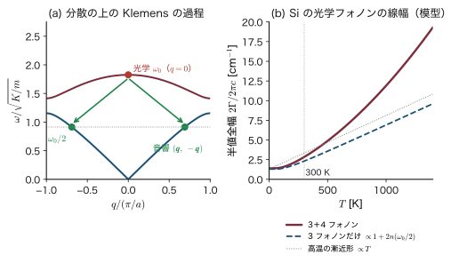
例題30.10 Klemens の式で $300\,\mathrm{K}$ と $10\,\mathrm{K}$ の線幅を比べる
Si の光学フォノン（$\hbar\omega_0=64.5\,\mathrm{meV}$）について，(1) 式 \eqref{eq:30-klemens} で $\Gamma(300\,\mathrm{K})/\Gamma(10\,\mathrm{K})$ を求めよ．(2) 図30.16(b) の 4 フォノンを含む模型では，$5\,\mathrm{K}$ と $300\,\mathrm{K}$ の半値全幅はいくらか．(3) 寿命の温度変化を述べよ．
解答．(1) $\hbar\omega_0/2=32.25\,\mathrm{meV}$，$k_BT=25.85\,\mathrm{meV}$（$300\,\mathrm{K}$）なので $\hbar\omega_0/2k_BT=1.248$，$n=1/(\ee^{1.248}-1)=1/(3.482-1)=0.403$，$1+2n=1.806$．$10\,\mathrm{K}$ では $k_BT=0.862\,\mathrm{meV}$，$\hbar\omega_0/2k_BT=37.4$ で $n\simeq\ee^{-37.4}\simeq0$，$1+2n=1.000$．比は $1.81$．(2) 模型の値で $5\,\mathrm{K}$ は $C+D=1.40\,\mathrm{cm^{-1}}$．$300\,\mathrm{K}$ では $\tilde\nu_0/2=264\,\mathrm{cm^{-1}}$（$32.7\,\mathrm{meV}$）で $1+2n=1.786$，$\tilde\nu_0/3=176\,\mathrm{cm^{-1}}$（$21.8\,\mathrm{meV}$）で $n=0.754$，$1+3n+3n^2=4.97$．半値全幅は
$$ 1.295\times1.786+0.105\times4.97=2.31+0.52=2.83\,\mathrm{cm^{-1}} $$(3) 寿命は $5\,\mathrm{K}$ で $5.31/1.40=3.8\,\mathrm{ps}$，$300\,\mathrm{K}$ で $5.31/2.83=1.9\,\mathrm{ps}$．
∎ 低温から室温までの線幅の増加の大部分は 3 フォノン過程（Klemens の因子 $1+2n$）で説明でき，室温で 4 フォノン過程は全幅の 2 割程度である．Klemens の因子の計算は第27章 演習27.5 でも行った．本節の式 \eqref{eq:30-klemens} は，その係数 $\Gamma_0$ が 3 次の力定数と状態密度で決まることを示している．
30.5.4 図で読む — bubble の虚部
第27章 27.5 節では，自己エネルギーを「2 次摂動のエネルギーのずれ（実部）」と「黄金律の崩壊率（虚部）」の組として定義した．本節の計算は，3 次の頂点を 2 回使う 2 次の過程の 虚部 にあたる．ファインマン図で描くと，観測するフォノンが頂点 ● で 2 個に分かれ，もう一つの頂点 ● で 1 個に戻る図（図30.17(b) の bubble，泡．第27章 図27.15(c) と同じ形）である．この図は時間の順に読める．途中の 2 本の線が保存則を満たして「本当に」存在できるとき（デルタ関数が 0 でないとき），フォノンは実際に崩壊し，線幅が生じる．保存則を満たさない仮想的な分裂と合体は，振動数のずれ（実部）だけを与える（30.6 節）．bubble の実部と虚部をそろえて Green 関数で導く方法は，姉妹編『線形応答理論』第14章 14.10 節（線幅 —— 多重線と寿命）と14.11 節にある（そこでの線幅の式は式 \eqref{eq:30-Gamma} と同じものである）．
30.5.5 3 フォノン過程以外の寄与と，線幅の測り方
- 同位体・点欠陥：質量や結合の乱れは，フォノンを別のモードへ弾性的に散乱する（振動数を変えない）．Rayleigh 散乱と同じで，率は振動数の 4 乗に比例する（30.7.3 項）．同位体の割合を変えた試料で Raman 線の幅が変わることが観測されている．
- 境界・粒界：試料の大きさより平均自由行程が長い低振動数の音響フォノンでは，境界での散乱が寿命を決める（30.7 節）．
- 4 フォノン過程：4 次の項による 2 個 → 2 個，1 個 → 3 個の過程．高温で $T^2$ に比例して効く．3 フォノン過程の位相空間が狭い物質（BAs など，例題30.3）では，室温でも無視できない（30.7.4 項）．
- 電子格子相互作用：金属や不純物を添加した半導体では，フォノンが電子正孔対を作って崩壊する過程も線幅に寄与する（第29章）．
補足：線幅と寿命の測り方
- Raman 分光・赤外分光：$\Gamma$ 点の光学フォノンの線の幅（第34章 34.8 節）．装置の分解能（Gauss 型）との畳み込みを差し引く（第27章 演習27.4）．
- 中性子非弾性散乱・X 線非弾性散乱：任意の波数のフォノンのピークの幅．分散全体の線幅がわかるが，分解能は Raman より粗い（第27章 27.7 節）．
- 時間分解分光（コヒーレントフォノン）：短いパルス光で格子をいっせいに揺らし，反射率の振動が $\ee^{-\Gamma t}$ で減衰する様子を直接見る．図30.14(a) を実験で描くことにあたる．
30.6 フォノン振動数の温度変化
30.6.1 振動数が温度で下がる 2 つの理由
Si の光学フォノンの Raman 線は，低温の約 $525\,\mathrm{cm^{-1}}$ から室温の約 $522\,\mathrm{cm^{-1}}$ へ，$1000\,\mathrm{K}$ では $505\,\mathrm{cm^{-1}}$ 程度まで下がる（図30.18(b)）．ほとんどの物質で，温めるとフォノンの振動数は下がる（軟らかくなる）．理由は 2 つに分けられる．
- 体積が変わるから（準調和の効果）．熱膨張で体積が $\Delta V$ だけ増えると，Grüneisen 定数の定義 \eqref{eq:30-gammamode} から $\Delta\omega_\lambda/\omega_\lambda=-\gamma_\lambda\,\Delta V/V$ だけ振動数が変わる．$\gamma_\lambda\gt0$ なら下がる．
- 体積を一定にしても，揺れが振動数を変えるから（本当の非調和の効果）．原子が大きく揺れると，揺れの範囲で平均したバネの硬さが，つり合いの位置での硬さ $\Phi^{(2)}$ と違ってくる．これは第27章 27.5 節の自己エネルギーの実部（エネルギーのずれ）にあたる．
この 2 つは，ファインマン図では 3 種類の図の役割として整理される（図30.17）．
- tadpole（3 次の頂点 2 個）：平均位置（結晶では体積・歪み）がずれた先で曲がりが変わる効果．理由 1 にあたる．
- loop（4 次の頂点 1 個）：揺れ $\langle u^2\rangle$ の分だけ 4 次の項がバネを硬くする（$\Phi^{(4)}\gt0$ のとき）．振動数を上げることが多い．
- bubble（3 次の頂点 2 個）：途中で 2 個のフォノンに分かれて戻る仮想的な過程．振動数を下げることが多く，保存則を満たすときは線幅も生む（30.5 節）．
理由 2 は loop と bubble の和である．どれも 3 次の頂点 2 個か 4 次の頂点 1 個を含むので，非調和性について同じ次数（$\Phi^{(3)2}$ と $\Phi^{(4)}$）であり，3 つをそろえて計算しないと正しい答えにならない．
30.6.2 1 自由度の非調和振動子で 3 つの図を計算する
1 自由度の振動子 $H=\dfrac{p^2}{2M}+cx^2-gx^3+fx^4$（$c=\tfrac12M\omega^2$）で，振動数のずれを $\Phi^{(4)}=24f$ の 1 次と $\Phi^{(3)}=-6g$ の 2 次まで求める．
導出 1：loop — 4 次の項を揺れで平均する
ステップ 1：$x^4$ を分解する．$x$ を 4 個掛けた $x\cdot x\cdot x\cdot x$ のうち 2 個を「揺れの平均」$\langle x^2\rangle$ で置き換え，残り 2 個を演算子のまま残す．4 個から 2 個を選ぶ選び方は $\binom42=6$ 通りなので
$$ x^4\;\longrightarrow\;6\langle x^2\rangle\,x^2\;(+\text{定数}) $$（定数はエネルギーを一様にずらすだけで，振動数には効かない．）これを 平均場の分解 という．図では，4 次の頂点 ■ から出る 4 本の線のうち 2 本をつないで輪にし（揺れの平均），残り 2 本を外線にしたものにあたる．
ステップ 2：バネが硬くなる．$fx^4\to6f\langle x^2\rangle x^2$ は 2 次の項 $cx^2$ に足されるので，バネ定数 $2c=M\omega^2$ が $M\omega^2+12f\langle x^2\rangle$ に変わる．$\omega'^2=\omega^2+12f\langle x^2\rangle/M$，ずれが小さいとして $\omega'\simeq\omega+\dfrac{12f\langle x^2\rangle}{2M\omega}$ なので
$$ \Delta\omega_{\rm loop}=\frac{6f}{M\omega}\langle x^2\rangle $$ステップ 3：準位で確かめる．1 次摂動のエネルギーは $f\langle n|x^4|n\rangle=fx_0^4(6n^2+6n+3)$（$x_0^2=\hbar/2M\omega$．$(a+a^\dagger)^4$ の対角要素を数えると得られる）．隣どうしの準位の間隔のずれは
$$ fx_0^4\bigl[6(n+1)^2+6(n+1)-6n^2-6n\bigr]=12fx_0^4\,(n+1) $$で，$n$ によって違う．1 自由度ではスペクトルの線が $n$ ごとに分かれる（多重線）．熱平衡での線の重心を求めるには，$n\to n+1$ の吸収の強さ $\propto(n+1)(p_n-p_{n+1})$（$p_n$ は準位 $n$ の占有確率．吸収 $p_n(n+1)$ から誘導放出 $p_{n+1}(n+1)$ を引いたもの）で重みをつける．重みの和は $\sum_n(n+1)(p_n-p_{n+1})=(\bar n+1)-\bar n=1$，ずれの重心は
$$ \begin{aligned} 12fx_0^4\sum_n(n+1)^2(p_n-p_{n+1})&=12fx_0^4\Bigl[\sum_np_n(n+1)^2-\sum_{m}p_{m}m^2\Bigr]\\ &=12fx_0^4\sum_np_n\bigl[(n+1)^2-n^2\bigr]=12fx_0^4(2\bar n+1) \end{aligned} $$（第 2 項は $m=n+1$ と添字をずらした．$m=0$ の項は 0 なので和の範囲は変わらない．最後は $\sum_np_n(2n+1)=2\bar n+1$．）
$\hbar\Delta\omega$ に直すと，$12fx_0^4(2\bar n+1)=\dfrac{6f\hbar}{M\omega}\cdot x_0^2(2\bar n+1)$ $=\hbar\cdot\dfrac{6f}{M\omega}\langle x^2\rangle$ で，ステップ 2 と一致する．∎
導出 2：tadpole — ずれた平均位置での曲がり
30.3 節より平均位置は $\langle x\rangle=\dfrac{3g}{2c}\langle x^2\rangle$ だけずれている．振動はこの位置のまわりで起こるので，バネ定数はポテンシャルの 2 階微分 $U''(x)=2c-6gx+12fx^2$ をずれた位置で評価したものになる．$g$ について最低次で
$$ M\omega'^2=U''(\langle x\rangle)\simeq2c-6g\langle x\rangle=M\omega^2-\frac{9g^2}{c}\langle x^2\rangle $$$c=\tfrac12M\omega^2$ を入れて $\omega'\simeq\omega-\dfrac{9g^2\langle x^2\rangle}{2cM\omega}$，すなわち
$$ \Delta\omega_{\rm tad}=-\frac{9g^2}{M^2\omega^3}\langle x^2\rangle $$∎ 伸びた側は軟らかい（$-6gx$）ので，膨張した位置では振動数が下がる．これは準調和近似の考え方そのものである．
導出 3：3 次の項の 2 次摂動の全体と，bubble
ステップ 1：2 次摂動．$(a+a^\dagger)^3\ket n$ は $\ket{n\pm3}$，$\ket{n\pm1}$ だけを含み，行列要素は $\bra{n+3}(a+a^\dagger)^3\ket n=\sqrt{(n+1)(n+2)(n+3)}$，$\bra{n+1}\cdots\ket n=3(n+1)^{3/2}$，$\bra{n-1}\cdots\ket n=3n^{3/2}$，$\bra{n-3}\cdots\ket n=\sqrt{n(n-1)(n-2)}$ である．エネルギーの分母はそれぞれ $\mp3\hbar\omega$，$\mp\hbar\omega$ なので
$$ \begin{aligned} E_n^{(2)}&=\frac{g^2x_0^6}{\hbar\omega}\left[-\frac{(n+1)(n+2)(n+3)}{3}-9(n+1)^3+9n^3+\frac{n(n-1)(n-2)}{3}\right]\\ &=-\frac{g^2x_0^6}{\hbar\omega}\bigl(30n^2+30n+11\bigr) \end{aligned} $$（$(n+1)(n+2)(n+3)$ $-n(n-1)(n-2)$ $=9n^2+9n+6$ を 3 で割ったものと，$9[(n+1)^3-n^3]$ $=27n^2+27n+9$ を足した．）
ステップ 2：間隔のずれと重心．$E^{(2)}_{n+1}-E^{(2)}_n=-\dfrac{60g^2x_0^6}{\hbar\omega}(n+1)$．導出 1 と同じ重みで重心をとって $(n+1)\to(2\bar n+1)$ とし，$x_0^4=\hbar^2/4M^2\omega^2$ を使うと
$$ \Delta\omega_{3}=-\frac{60g^2x_0^6(2\bar n+1)}{\hbar^2\omega}=-\frac{60g^2x_0^4}{\hbar^2\omega}\langle x^2\rangle=-\frac{15g^2}{M^2\omega^3}\langle x^2\rangle $$ステップ 3：tadpole と bubble に分ける．2 次摂動の中間状態を図で描くと，2 種類に分けられる．1 つは，2 つの頂点を結ぶ線が「振動数 0 の尾」になっているもの，すなわち 3 次の項がまず平均位置をずらし，ずれた位置でもう一度 3 次の項が曲がりを変えるもので，これが導出 2 で計算した tadpole である．もう 1 つは，観測するフォノンが途中で本当に 2 個のフォノンに分かれて戻るもので，これが bubble である．2 次摂動の全体はこの 2 つの和なので，全体から導出 2 の tadpole を引いた残りが bubble になる（図ごとに別々に計算して同じ結果になることは，姉妹編『線形応答理論』第14章 14.6 節で確かめられる）：
$$ \Delta\omega_{\rm bub}=\Delta\omega_3-\Delta\omega_{\rm tad}=-\frac{15g^2}{M^2\omega^3}\langle x^2\rangle+\frac{9g^2}{M^2\omega^3}\langle x^2\rangle=-\frac{6g^2}{M^2\omega^3}\langle x^2\rangle $$∎（摂動の式の精度の目安：$\hbar=M=\omega=1$，$g=0.01$，$f=0.002$ の振動子では，ハミルトニアンを数値的に対角化して得た準位の間隔（$E_1-E_0=1.00522$，$E_2-E_1=1.01041$）が，1 次・2 次の摂動の式（$1.00525$，$1.01050$）と $10^{-4}$ 以内で一致する．）
3 つをまとめると
となる．どの図も揺れ $\langle x^2\rangle$ に比例するので，振動数のずれは $2\bar n+1$ に比例し，0 K でも零点振動の分が残り，高温では温度に比例する．loop は $f\gt0$ なら正，tadpole と bubble は必ず負である．
例題30.11 Morse 振動子の 3 つの図の比と，1 本の結合の模型での見積もり
(1) Morse ポテンシャル（$c=D\alpha^2$，$g=D\alpha^3$，$f=\tfrac7{12}D\alpha^4$）で，式 \eqref{eq:30-shift} の loop，tadpole，bubble の比と，$\Delta\omega/\omega$ を $\hbar\omega/4D$ で表せ．(2) 結合エネルギー $D=2.3\,\mathrm{eV}$，$\hbar\omega=64.5\,\mathrm{meV}$ の結合（Si の光学フォノンを 1 本の結合に見立てた粗い模型）で，0 K の振動数のずれと，$0\to300\,\mathrm{K}$ の変化を $\mathrm{cm^{-1}}$ で求めよ．
解答．(1) $M\omega^2=2c=2D\alpha^2$ を使って各項を $\omega$ で割る．loop：$\frac{6f}{M\omega^2}=\frac{6\cdot\frac7{12}D\alpha^4}{2D\alpha^2}=\frac74\alpha^2$．tadpole：$-\frac{9g^2}{M^2\omega^4}=-\frac{9D^2\alpha^6}{4D^2\alpha^4}=-\frac94\alpha^2$．bubble：$-\frac{6D^2\alpha^6}{4D^2\alpha^4}=-\frac64\alpha^2$．比は $7:(-9):(-6)$，和は $-2\alpha^2$ で
$$ \frac{\Delta\omega}{\omega}=-2\alpha^2\langle x^2\rangle=-2\alpha^2\frac{\hbar}{2M\omega}\coth\frac{\hbar\omega}{2k_BT}=-2\cdot\frac{\hbar\omega}{4D}\coth\frac{\hbar\omega}{2k_BT} $$（$\alpha^2\hbar/2M\omega=\alpha^2\hbar\omega/2M\omega^2=\hbar\omega/4D$．）(2) $\hbar\omega/4D=0.0645/9.2=7.0\times10^{-3}$．0 K では $\coth=1$ で $\Delta\omega/\omega=-0.014$，$520\,\mathrm{cm^{-1}}$ に掛けて約 $-7\,\mathrm{cm^{-1}}$．$300\,\mathrm{K}$ では $\hbar\omega/2k_BT=1.248$，$\coth1.248=1.180$ なので，$0\to300\,\mathrm{K}$ の変化は $-0.014\times0.180\times520=-1.3\,\mathrm{cm^{-1}}$．
∎ Morse 型では 3 次の 2 つの図（$-15$）が loop（$+7$）に勝ち，振動数は温めると下がる．粗い模型でも，室温までの変化の向きと桁（実測は約 $-3\,\mathrm{cm^{-1}}$）が出る．図30.18(a) はこの 3 つの寄与の温度変化である．
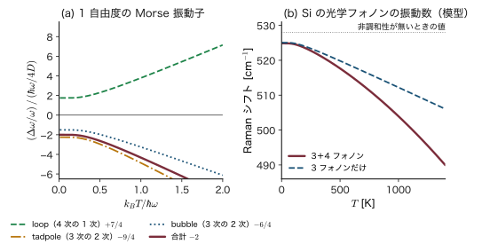
30.6.3 結晶では — 体積の効果と，体積一定の効果を分ける
結晶でも同じ 3 種類の図が現れるが，読み方が少し変わる（姉妹編『線形応答理論』第14章 14.11 節）．
- tadpole：1 自由度では「平均位置のずれ」だったものが，結晶では主に 一様な歪み（体積変化） になる．体積が $\Delta V$ だけ増えると振動数が $-\gamma_\lambda\omega_\lambda\Delta V/V$ だけ変わる，という準調和近似の式は，この tadpole にあたる．
- loop と bubble：体積を一定にしたときの非調和の効果（理由 2）．結晶の bubble は，途中の 2 個のフォノンの振動数の和や差が観測するフォノンの振動数の上か下かによって符号が変わるので，1 自由度のようにいつも負とは限らない．
実験では，圧力を変えて振動数を測れば $\gamma_\lambda$ がわかり，熱膨張の測定から理由 1 の大きさが出せる．全体の温度変化からそれを引けば，体積一定の非調和の効果（理由 2）が取り出せる．
例題30.12 Si の Raman 線の温度変化を 2 つの理由に分ける
Si の光学フォノンのモード Grüneisen 定数を $\gamma_O\simeq1.0$ とする．$5\,\mathrm{K}$ から $300\,\mathrm{K}$ までの体積の増加を $\Delta V/V\simeq7\times10^{-4}$（線膨張率を積分した値の程度）とする．(1) 理由 1（体積の効果）による振動数の変化を求めよ．(2) 図30.18(b) の模型で $5\,\mathrm{K}$ と $300\,\mathrm{K}$ の振動数を求め，全体の変化に対する理由 1 の割合を求めよ．
解答．(1) $\Delta\tilde\nu=-\gamma_O\tilde\nu\,\Delta V/V$ より
$$ \Delta\tilde\nu=-1.0\times525\times7\times10^{-4}\,\mathrm{cm^{-1}}=-0.37\,\mathrm{cm^{-1}} $$(2) $5\,\mathrm{K}$ では $n\simeq0$ なので $\tilde\nu=528-2.96-0.174=524.87\,\mathrm{cm^{-1}}$．$300\,\mathrm{K}$ では例題30.10 の $1+2n=1.786$，$1+3n+3n^2=4.97$ を使い
$$ \tilde\nu=528-2.96\times1.786-0.174\times4.97=528-5.29-0.86=521.85\,\mathrm{cm^{-1}} $$変化は $-3.0\,\mathrm{cm^{-1}}$ で，理由 1 はその約 12 % である．
∎ Si の光学フォノンでは，振動数の温度変化の大部分は体積一定の非調和性（loop と bubble）から来る．準調和近似だけで振動数の温度変化を計算すると，大きく過小評価することになる．逆に，熱膨張の大きい物質や低振動数の音響モードでは，理由 1 が主になることもある．
シミュレーターの「振動数はどう動くか」のタブでは，loop・tadpole・bubble の 3 つの寄与を，4 次の係数や温度を変えて見比べられる（thermal-expansion-simulator の ③ 振動数はどう動くか →．解説は §5）．そこでは $-\xi x^3+\varphi x^4$ と書いており，本章の $g$，$f$ がそれぞれ $\xi$，$\varphi$ にあたる．
30.6.4 高温の比熱が Dulong–Petit の値からずれる
表30.1 の 6 番目，「高温の比熱が $3Nk_B$ のまま」も，振動数のずれと同じ非調和項で解決する．調和振動子の古典的な平均エネルギーは，振動数によらず厳密に $k_BT$ なので，比熱は $k_B$（結晶では $3Nk_B$，Dulong–Petit の値）で一定になる．非調和項があると，振動の範囲で平均したバネの硬さが温度で変わるので（30.6.2 項），平均エネルギーは $k_BT$ からずれ，比熱は高温で温度に比例して $3Nk_B$ からずれていく（図30.19）．体積一定の比熱 $C_V$ で見ても起こる効果で，熱膨張による $C_p-C_V$（例題30.1）とは別のものである．
導出：古典的な非調和振動子の比熱 $C=k_B\bigl(1-2Ak_BT\bigr)$
ステップ 1：分配関数を展開する．1 自由度の振動子 $H=\frac{p^2}{2M}+cx^2-gx^3+fx^4$ の古典的な分配関数は $Z=\frac{1}{2\pi\hbar}\int\dd p\int\dd x\,\ee^{-\beta H}$（$\beta=1/k_BT$）である．$p$ の積分は非調和項によらないので，$x$ の積分だけを見る．$\ee^{-\beta(-gx^3+fx^4)}$ を $g$ の 2 次と $f$ の 1 次まで展開すると
$$ \ee^{\beta gx^3-\beta fx^4}\simeq1+\beta gx^3-\beta fx^4+\frac12\beta^2g^2x^6 $$ステップ 2：調和振動子の Gauss 分布で平均する．重み $\ee^{-\beta cx^2}$ による平均を $\langle\cdots\rangle_0$ と書くと，$\langle x^2\rangle_0=\frac{1}{2\beta c}$，奇数乗の平均は 0，$\langle x^4\rangle_0=3\langle x^2\rangle_0^2$，$\langle x^6\rangle_0=15\langle x^2\rangle_0^3$ である（Gauss 積分の公式）．したがって
$$ \frac{Z}{Z_0}\simeq1-\beta f\cdot\frac{3}{4\beta^2c^2}+\frac12\beta^2g^2\cdot\frac{15}{8\beta^3c^3}=1-\frac{3f}{4c^2}k_BT+\frac{15g^2}{16c^3}k_BT $$（$Z_0$ は調和振動子の分配関数）．
ステップ 3：自由エネルギーと比熱．$F=-k_BT\ln Z$ と $\ln(1+\epsilon)\simeq\epsilon$ から，非調和項による自由エネルギーの変化は
$$ F_{\rm anh}=-k_BT\ln\frac{Z}{Z_0}\simeq A\,(k_BT)^2,\qquad A\equiv\frac{3f}{4c^2}-\frac{15g^2}{16c^3} $$である．エントロピー $S=-\partial F/\partial T$，内部エネルギー $E=F+TS=F-T\,\partial F/\partial T$ を使うと，$F_{\rm anh}\propto T^2$ の部分は $E_{\rm anh}=Ak_B^2T^2-2Ak_B^2T^2=-Ak_B^2T^2$ を与える．調和の部分の $E=k_BT$ と合わせて温度で微分すると
∎ 4 次の項（$f\gt0$，バネが硬くなる）は比熱を下げ，3 次の項（$g^2$）は比熱を上げる．
式 \eqref{eq:30-Canh} の $A$ は，振動数のずれの式 \eqref{eq:30-shift} と同じ組み合わせである．実際，高温の $\langle x^2\rangle=k_BT/2c$ を式 \eqref{eq:30-shift} に入れて $c=\frac12M\omega^2$ を使うと $\Delta\omega/\omega=\bigl(\frac{3f}{2c^2}-\frac{15g^2}{8c^3}\bigr)k_BT=2Ak_BT$ となるので，
$$ \frac{C}{k_B}-1=-\frac{\Delta\omega}{\omega}\qquad(\text{高温の古典極限}) $$が成り立つ．振動数が温度で 1 % 下がる（軟らかくなる）なら，比熱は Dulong–Petit の値より 1 % 大きくなる．表30.1 で「振動数と同じ非調和項から決まる」と書いたのはこの意味である．Morse ポテンシャル（$c=D\alpha^2$，$g=D\alpha^3$，$f=\frac7{12}D\alpha^4$）では $A=\frac{7}{16D}-\frac{15}{16D}=-\frac{1}{2D}$ なので
$$ C=k_B\Bigl(1+\frac{k_BT}{D}\Bigr) $$となる（例題30.11 の高温の極限 $\Delta\omega/\omega=-k_BT/D$ と，上の関係で結ばれている）．例題30.11 の値（$D=2.3\,\mathrm{eV}$）では，$1000\,\mathrm{K}$（$k_BT=86\,\mathrm{meV}$）で約 4 % のずれである．実際の結晶でも，高温の定積比熱は $3Nk_B$ から数 % ずれ，多くの物質で温度とともに大きくなる．
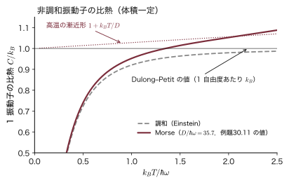
30.7 格子熱伝導
30.7.1 第14章の気体運動論から，モードごとの式へ
絶縁体や半導体では，熱は主にフォノンが運ぶ．第14章 14.7 節では，フォノンを「結晶の中を飛び回る気体」とみなし，すべてのフォノンが同じ速さ $v$，同じ平均自由行程 $\ell$ をもつとして
$$ \kappa=\frac13Cv\ell\qquad(C\text{ は単位体積あたりの比熱}) $$を導いた．しかし実際のフォノンは，モード $\lambda=(\qq,\nu)$ ごとに比熱 $c_\lambda$，群速度 $\vv_\lambda=\nabla_\qq\omega_\lambda$，寿命 $\tau_\lambda$ が大きく違う．Si では，室温の熱の約半分を，平均自由行程が $1\,\mu\mathrm{m}$ を超える低振動数のフォノンが運んでいる（第14章 例題14.7 の注意）．モードごとの寿命（30.5 節）を使って熱伝導率を組み立てるには，フォノンの分布の時間変化を表す Boltzmann 方程式 を使う．電子の電気伝導について第21章 21.4 節で導いた Boltzmann 方程式と緩和時間近似を，そのままフォノンに当てはめる（電場の代わりに温度勾配が分布をずらす）．
30.7.2 Boltzmann 方程式の緩和時間近似で熱伝導率を導く
考え方を図30.20 に示す．温度勾配があると，右向きに進むフォノンは高温側から，左向きに進むフォノンは低温側からやって来るので，その場所の平衡の分布から少しずれる．衝突（U 過程，欠陥，境界）はこのずれを平衡に戻そうとする．「勾配がずれを作る速さ」と「衝突がずれを消す速さ」がつり合ったところで，分布のずれ，したがって熱流が決まる．
導出：$\kappa=\dfrac{1}{3V}\displaystyle\sum_\lambda c_\lambda v_\lambda^2\tau_\lambda$（緩和時間近似）
ステップ 1：分布関数．場所 $\rr$ の近くにいるモード $\lambda$ のフォノン数を $n_\lambda(\rr,t)$ とする（場所は波長より十分大きい範囲で平均したもの）．フォノンは群速度 $\vv_\lambda$ で進むので，衝突が無ければ $n_\lambda$ は分布ごと流れていく：$n_\lambda(\rr,t+\dd t)=n_\lambda(\rr-\vv_\lambda\dd t,t)$．衝突による変化を加えると
$$ \frac{\partial n_\lambda}{\partial t}+\vv_\lambda\cdot\nabla n_\lambda=\left(\frac{\partial n_\lambda}{\partial t}\right)_{\rm 衝突} $$これがフォノンの Boltzmann 方程式 である（左辺の第 2 項は，$n_\lambda(\rr-\vv_\lambda\dd t)\simeq n_\lambda(\rr)-\vv_\lambda\dd t\cdot\nabla n_\lambda$ から来る）．
ステップ 2：緩和時間近似．衝突の項を，平衡の分布 $n^0_\lambda=n(\omega_\lambda;T(\rr))$（その場所の温度の Bose 分布）からのずれ $\delta n_\lambda=n_\lambda-n_\lambda^0$ に比例する形で近似する：
$$ \left(\frac{\partial n_\lambda}{\partial t}\right)_{\rm 衝突}=-\frac{\delta n_\lambda}{\tau_\lambda} $$$\tau_\lambda$ は 30.5 節の寿命 $1/2\Gamma_\lambda$ に，欠陥や境界による散乱を足したものである．これを 緩和時間近似（relaxation time approximation，RTA）という．
ステップ 3：定常状態で解く．時間変化の無い定常状態（$\partial n_\lambda/\partial t=0$）で，温度勾配が小さいとき，左辺の $\nabla n_\lambda$ は最低次で平衡の分布の勾配 $\nabla n^0_\lambda=(\partial n^0_\lambda/\partial T)\nabla T$ で近似できる．したがって
$$ \vv_\lambda\cdot\nabla T\,\frac{\partial n^0_\lambda}{\partial T}=-\frac{\delta n_\lambda}{\tau_\lambda} \quad\Longrightarrow\quad \delta n_\lambda=-\tau_\lambda\,\frac{\partial n^0_\lambda}{\partial T}\,\vv_\lambda\cdot\nabla T $$ステップ 4：熱流．平衡の分布は $\vv_\lambda$ と $\vv_{-\lambda}=-\vv_\lambda$ のモードに同じ数のフォノンを置くので熱を運ばない．ずれ $\delta n_\lambda$ だけが熱流を作る．結晶の体積を $V$ として
$$ \jj_Q=\frac1V\sum_\lambda\hbar\omega_\lambda\,\vv_\lambda\,\delta n_\lambda =-\frac1V\sum_\lambda\underbrace{\hbar\omega_\lambda\frac{\partial n^0_\lambda}{\partial T}}_{c_\lambda}\tau_\lambda\,\vv_\lambda(\vv_\lambda\cdot\nabla T) $$$\hbar\omega_\lambda\,\partial n^0_\lambda/\partial T$ はモード $\lambda$ の比熱 $c_\lambda$（30.4 節）そのものである．
ステップ 5：立方対称の結晶．温度勾配を $x$ 方向にとると $j_{Q,x}=-\frac1V\sum_\lambda c_\lambda\tau_\lambda v_{\lambda x}^2\,\partial T/\partial x$．立方対称の結晶では $x,y,z$ が対等なので $\sum c\tau v_x^2=\sum c\tau v_y^2=\sum c\tau v_z^2=\frac13\sum c\tau v^2$．$j_Q=-\kappa\,\partial T/\partial x$ と比べて
∎ すべてのモードで $v_\lambda=v$，$\tau_\lambda=\tau$ が同じなら，$\frac1V\sum c_\lambda=C$，$v\tau=\ell$ として第14章の $\kappa=\frac13Cv\ell$ に戻る．
式 \eqref{eq:30-kappa} の各モードの寄与は「比熱 × 速さ × 平均自由行程 $v_\lambda\tau_\lambda$」である．比熱が大きくても（光学モード），群速度が小さければ（平らな分散）熱はあまり運ばない．熱を主に運ぶのは，群速度が大きく寿命の長い，低振動数の音響フォノン である．
注意：N 過程と緩和時間近似
N 過程だけでは熱抵抗は生じない（第14章 定理14.2）．N 過程はフォノン系の全運動量を保存するので，「流れている分布」を平衡の分布へ戻すことはできず，別の「流れている分布」へ移すだけだからである．ところが緩和時間近似は，すべての衝突が分布を静止した平衡へ戻すと仮定しているので，N 過程の多い物質では熱伝導率を過小評価する．これを補う方法として，N 過程を別に扱う Callaway の模型（1959）や，Boltzmann 方程式を近似なしに（反復法や行列の対角化で）解く方法がある．後者では N 過程の多いダイヤモンドやグラフェンで緩和時間近似より大きな熱伝導率が得られる．N 過程が U 過程よりずっと多いときには，フォノン気体が流体のように流れる フォノン流体力学 や，温度の波が伝わる 第二音波（second sound）も現れる．
30.7.3 散乱の種類と，$\kappa(T)$ の山
式 \eqref{eq:30-kappa} に入る $\tau_\lambda$ を決める散乱を整理する．独立な散乱の率は足し合わされる（Matthiessen（マティーセン）則）：
- Umklapp 散乱 $1/\tau_{\rm U}$：30.5 節の式 \eqref{eq:30-Gamma} のうち U 過程の部分．高温では相手のフォノン数 $\propto T$ なので $\propto T$．低温では凍結する．2 個のフォノンの波数の和が Brillouin 域の外に出るには，それぞれが域の大きさの半分程度（$\abs\qq\gtrsim\pi/2a$）の波数をもつ必要があり，そのようなフォノンのエネルギーは $k_B\Theta_D$ の数分の 1 である．低温ではそのようなフォノンが $\ee^{-\Theta_D/bT}$ のようにしかいないので，U 過程はほとんど起こらない（$b\simeq2\sim3$．第14章 14.7.4 項）．よく使う模型は $1/\tau_{\rm U}=B\omega^2T\ee^{-\Theta_D/bT}$ である．因子 $T$ は高温で相手のフォノンの数が $T$ に比例すること（式 \eqref{eq:30-Gamma} の $n_i\simeq k_BT/\hbar\omega_i$），$\omega^2$ は頂点の強さと保存則を満たす相手の数が振動数とともに増えることを表す経験的な形である．
- 同位体・点欠陥の散乱 $1/\tau_{\rm iso}$：質量の違う原子は，波長より小さな「質量の乱れ」としてフォノンを散乱する．光の Rayleigh 散乱と同じ理由で率は $\omega^4$ に比例し，$1/\tau_{\rm iso}=A\omega^4$，$A=V_0\,g_m/4\pi v^3$ である（Klemens の式．$V_0$ は原子 1 個の体積，$v$ は音速，$g_m=\sum_if_i(1-M_i/\bar M)^2$ は質量の分散で，$f_i$ は同位体 $i$ の割合，$\bar M$ は平均の質量）．
- 境界散乱 $1/\tau_{\rm B}=v/L$：平均自由行程が試料の大きさ $L$ に達すると，フォノンは表面で散乱される（Casimir 極限）．
音響フォノンを 1 本の Debye 分散 $\omega=vq$（3 分枝とも同じ $v$，$\omega\le\omega_D$）で近似すると，式 \eqref{eq:30-kappa} は 1 重積分になる．
導出：Debye–Callaway 型の式
ステップ 1：和を積分に．単位体積あたりのモードの数は，3 分枝の Debye の状態密度 $g(\omega)\dd\omega=\dfrac{3\omega^2}{2\pi^2v^3}\dd\omega$（第14章）．1 モードの比熱は $c(\omega)=k_B\dfrac{x^2\ee^x}{(\ee^x-1)^2}$（$x=\hbar\omega/k_BT$）．したがって
$$ \kappa=\frac13\int_0^{\omega_D}c(\omega)\,v^2\,\tau(\omega)\,\frac{3\omega^2}{2\pi^2v^3}\dd\omega=\frac{1}{2\pi^2v}\int_0^{\omega_D}c(\omega)\,\tau(\omega)\,\omega^2\dd\omega $$ステップ 2：無次元の変数へ．$\omega=k_BTx/\hbar$，$\omega^2\dd\omega=(k_BT/\hbar)^3x^2\dd x$ を入れて
ステップ 3：低温の極限．境界散乱だけが効くとき $\tau=L/v$ は一定で，上限は $\infty$ にしてよい．積分 $\int_0^\infty x^4\ee^x/(\ee^x-1)^2\dd x=4\pi^4/15$ を使うと
$$ \kappa=\frac{2\pi^2}{15}\,k_B\left(\frac{k_BT}{\hbar}\right)^3\frac{L}{v^2}\;\propto\;T^3L $$∎ これは $\frac13CvL$ に Debye の低温比熱 $C=\frac{2\pi^2}{5}k_B(k_BT/\hbar v)^3$ を入れたものと一致する．
図30.21 は，Si に近いパラメータで式 \eqref{eq:30-callaway} を計算したものである．(a) のように，3 種類の散乱はそれぞれ振動数と温度への依存性が違う．その結果，(b) の $\kappa(T)$ は次の山の形になる．
- 低温：U 過程は凍結し，境界散乱が支配する．$\kappa\propto T^3$ で，試料が細いほど小さい（緑）．
- 山：U 過程が指数関数的に立ち上がる温度（$\Theta_D$ の数十分の 1）で最大になる．同位体散乱は山の高さを大きく変える（藍の破線は同位体なし）．
- 高温：U 過程が支配し，$\kappa$ はおよそ $1/T$ で下がる．非調和性が強い（$B$ が大きい）ほど低い（琥珀）．
山ができる理由は，$\kappa\simeq\frac13Cv\ell$ の 2 つの因子，比熱 $C(T)$ と平均自由行程 $\ell(T)$ が逆向きに変わることにある（図30.22）．低温では $\ell$ は試料の太さ $L$ で頭打ちになって一定で，$C\propto T^3$ が $\kappa$ を決める．温度を上げると $C$ は Debye 温度の数分の 1 で飽和に向かい，一方で $\ell$ は U 過程が立ち上がるとともに $\ee^{\Theta_D/bT}$ のように急に短くなる．$C$ の増え方が $\ell$ の減り方に負ける温度で，積 $\kappa$ が最大になる．
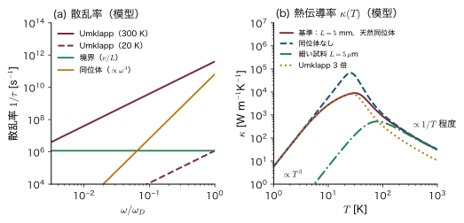
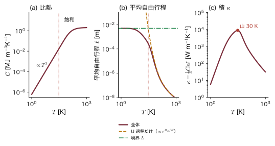
例題30.13 低温の熱伝導率は試料の太さで決まる
太さ $L=1\,\mathrm{mm}$ の Si の棒（$v=5900\,\mathrm{m/s}$）の $2\,\mathrm{K}$ と $4\,\mathrm{K}$ の熱伝導率を，境界散乱だけを考えて求めよ．太さを $0.1\,\mathrm{mm}$ にするとどうなるか．
解答．式 \eqref{eq:30-callaway} の低温の極限 $\kappa=\frac{2\pi^2}{15}k_B(k_BT/\hbar)^3L/v^2$ で，$2\,\mathrm{K}$ では $k_BT/\hbar=2.619\times10^{11}\,\mathrm{s^{-1}}$（$1.381\times10^{-23}\times2/1.0546\times10^{-34}$），その 3 乗は $1.796\times10^{34}\,\mathrm{s^{-3}}$．
$$ \kappa=1.316\times1.381\times10^{-23}\times1.796\times10^{34}\times\frac{10^{-3}}{(5900)^2}\,\mathrm{W\,m^{-1}K^{-1}}=9.4\,\mathrm{W\,m^{-1}K^{-1}} $$（$2\pi^2/15=1.316$．）$4\,\mathrm{K}$ では $2^3=8$ 倍で $75\,\mathrm{W\,m^{-1}K^{-1}}$．太さを $1/10$ にすると $\kappa$ も $1/10$ になる．
∎ 極低温の熱伝導率は物質の性質ではなく試料の寸法で決まる．同じ結晶を細く削ると熱伝導率が下がることは，実験で確かめられている（第14章 14.7.5 項）．
例題30.14 同位体散乱 — ダイヤモンドの 1 % の $^{13}$C
(1) 天然の炭素（$^{12}$C 98.9 %，$^{13}$C 1.1 %），$^{12}$C を 99.9 % に濃縮した炭素，天然の Si（$^{28}$Si 92.23 %，$^{29}$Si 4.68 %，$^{30}$Si 3.09 %）の質量の分散 $g_m$ を求めよ．(2) 天然のダイヤモンド（原子 1 個の体積 $V_0=a^3/8$，$a=3.567\,\text{Å}$，平均の音速 $v\simeq1.3\times10^4\,\mathrm{m/s}$）で，室温の熱を主に運ぶ振動数の目安 $\hbar\omega=3k_BT$ のフォノンの同位体散乱による平均自由行程 $v\tau_{\rm iso}$ を求めよ．
解答．(1) 天然の炭素は $\bar M=0.989\times12.000$ $+0.011\times13.003=12.011$ で
$$ \begin{aligned} g_m&=0.989\Bigl(1-\frac{12.000}{12.011}\Bigr)^2+0.011\Bigl(1-\frac{13.003}{12.011}\Bigr)^2\\ &=0.989\times8.4\times10^{-7}+0.011\times6.82\times10^{-3}=7.6\times10^{-5} \end{aligned} $$99.9 % では同じ計算で $7.0\times10^{-6}$（約 1/11）．Si は $2.0\times10^{-4}$．(2) $V_0=(3.567\times10^{-10})^3/8\,\mathrm{m^3}=5.67\times10^{-30}\,\mathrm{m^3}$，
$$ A=\frac{V_0g_m}{4\pi v^3}=\frac{5.67\times10^{-30}\times7.6\times10^{-5}}{4\pi\times2.197\times10^{12}}\,\mathrm{s^3}=1.56\times10^{-47}\,\mathrm{s^3} $$$\omega=3k_BT/\hbar=1.18\times10^{14}\,\mathrm{s^{-1}}$（$300\,\mathrm{K}$）なので $\omega^4=1.92\times10^{56}\,\mathrm{s^{-4}}$，$\tau_{\rm iso}=1/A\omega^4=3.3\times10^{-10}\,\mathrm{s}$，$v\tau_{\rm iso}=4.3\,\mu\mathrm{m}$．
∎ ダイヤモンドは非調和性が弱く（Debye 温度が高く U 過程が起こりにくい），室温でも熱を運ぶフォノンの平均自由行程が長い．そのため，わずか 1 % の $^{13}$C による数 $\mu\mathrm{m}$ の平均自由行程が無視できず，濃縮すると室温の熱伝導率が約 2200 から約 $3300\,\mathrm{W\,m^{-1}K^{-1}}$ に上がる（第14章 14.7.5 項）．
例題30.15 U 過程の凍結
Si（$\Theta_D=645\,\mathrm{K}$）で $1/\tau_{\rm U}\propto\ee^{-\Theta_D/3T}$ とする．同じ振動数のフォノンの U 過程による寿命は，$100\,\mathrm{K}$ から $50\,\mathrm{K}$ に冷やすと何倍になるか（$\omega^2T$ の因子の $T$ の変化も含めよ）．
解答．寿命は $\tau_{\rm U}\propto\ee^{\Theta_D/3T}/T$．比は
$$ \frac{\tau_{\rm U}(50\,\mathrm{K})}{\tau_{\rm U}(100\,\mathrm{K})}=\frac{100}{50}\cdot\exp\Bigl[\frac{645}{3}\Bigl(\frac1{50}-\frac1{100}\Bigr)\Bigr]=2\times\ee^{2.15}=2\times8.58=17 $$∎ 温度を半分にするだけで U 過程による寿命は 17 倍に延びる．このため $\kappa$ は山の高温側で急に立ち上がり，低温では境界や同位体による散乱に主役が移る．
30.7.4 熱伝導率の高い物質と低い物質
図30.23 に室温の熱伝導率の桁を示す（代表的な値の目安）．5 桁以上にわたる違いを，式 \eqref{eq:30-kappa} の因子で整理できる．
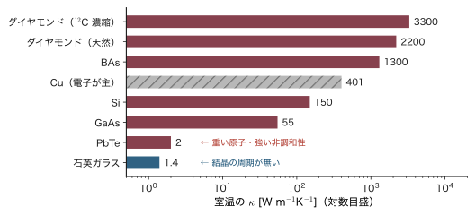
熱伝導率が高くなる条件は，軽い原子と強い結合（音速 $v$ と Debye 温度が高い），単純な結晶構造（光学分枝が少なく，熱を運ぶ音響分枝の割合が大きい），弱い非調和性（Grüneisen 定数が小さく $\Phi^{(3)}$ が小さい），同位体の純度（$g_m$ が小さい）である．ダイヤモンドはそのすべてを満たす．BAs は，B と As の質量比が大きいために音響分枝と光学分枝のあいだに大きな隙間があり（例題30.3），さらに音響分枝どうしが近接して束になっているので，3 フォノン過程の保存則を満たす組が非常に少ない．Lindsay，Broido，Reinecke（2013）は第一原理計算でダイヤモンドに匹敵する熱伝導率を予言した．その後，4 フォノン過程を入れると予言は下がることが示され，2018 年に複数のグループが約 $1000\sim1300\,\mathrm{W\,m^{-1}K^{-1}}$ を測定した．BAs は，3 フォノン過程が抑えられた物質では 4 フォノン過程（30.5.5 項）が無視できないことを示した例でもある．
熱伝導率を低くする設計は熱電材料で重要である．熱電変換の性能指数 $ZT=S^2\sigma T/\kappa$（$S$ は Seebeck 係数，$\sigma$ は電気伝導率）を上げるには，電子の流れを損なわずに $\kappa$ だけを下げたい．そのための指針は，(i) 重い原子（$v$ が小さい：PbTe，$\mathrm{Bi_2Te_3}$），(ii) 強い非調和性（$\Phi^{(3)}$ が大きく，Grüneisen 定数が大きい：SnSe など），(iii) かご状の結晶の中で弱く束縛された原子が大きく揺れる ラットリング（rattling．クラスレートやスクッテルダイト）による低振動数の局在モードと音響フォノンの散乱，(iv) 平均自由行程程度の大きさのナノ構造や粒界による境界散乱（第14章 例題14.7 の 46 nm），である．これを「フォノンにはガラス，電子には結晶」（phonon-glass electron-crystal）と表現することもある．
どこまで下げられるか．平均自由行程がフォノンの波長の半分程度まで短くなると，フォノンという「粒子」の描像自体が成り立たなくなり，熱は隣どうしの原子の振動のあいだを拡散的に移るようになる．その極限で見積もった熱伝導率を 最小熱伝導率（minimum thermal conductivity）といい，多くの物質で $1\,\mathrm{W\,m^{-1}K^{-1}}$ 程度以下である．石英ガラスなどのアモルファスの熱伝導率はこの値に近い．
応用：熱電材料で $\kappa$ を下げる
格子熱伝導率を下げる 4 つの方法（重い原子，非調和性，ラットリング，ナノ構造）が性能指数 $ZT$ をどう変えるかは，熱電のシミュレーターの「κ を下げる（PGEC）」のタブで試せる（thermoelectric-simulator の ④ κ を下げる →）．
補足：電子による熱伝導との区別
金属では，伝導電子が格子よりずっと多くの熱を運ぶ．Cu の $401\,\mathrm{W\,m^{-1}K^{-1}}$ のうち格子の寄与は数 $\mathrm{W\,m^{-1}K^{-1}}$ 程度である．電子の熱伝導率は電気伝導率と Wiedemann–Franz 則 $\kappa_{\rm el}=L\sigma T$ で結ばれる（第15章 15.8 節）．測定した $\kappa$ から $L\sigma T$ を引くと格子の寄与が見積もれる．本節の議論は，絶縁体・半導体と，金属の格子の寄与についてのものである．
30.7.5 第一原理計算で熱伝導率を計算する
現在では，式 \eqref{eq:30-Gamma} と式 \eqref{eq:30-kappa} を使って，経験的なパラメータなしに熱伝導率を計算できる．手順は次のとおりである．
- 2 次の力定数：スーパーセルの中で原子を 1 個ずつ少しだけ動かし，各原子に働く力を密度汎関数理論で計算して $\Phi^{(2)}$ を得る．調和のフォノン $\omega_\lambda$，$\vv_\lambda$，$c_\lambda$ が出る．
- 3 次の力定数：原子を 2 個ずつ動かした多数の配置で力を計算し，$\Phi^{(3)}$ を得る（計算量の大部分はここ）．必要に応じて 4 次も．
- 線幅と寿命：式 \eqref{eq:30-H3} で頂点の強さ $\Psi$ を作り，式 \eqref{eq:30-Gamma} で全モードの $\Gamma_\lambda$ を計算する．同位体・境界の散乱を Matthiessen 則 \eqref{eq:30-matthiessen} で加える．
- 熱伝導率：緩和時間近似の式 \eqref{eq:30-kappa}，または Boltzmann 方程式を近似なしに解いて $\kappa$ を得る．モードごと・振動数ごとの寄与や，平均自由行程ごとの累積の寄与（どの大きさのナノ構造が効くか）も得られる．
このための公開ソフトウェアとして phono3py（Togo，Chaput，Tanaka 2015），ShengBTE（Li，Carrete，Katcho，Mingo 2014），ALAMODE（Tadano，Gohda，Tsuneyuki 2014）などがある．計算に使ったソフトウェアは，その論文を必ず引用する（本書の方針）．ALAMODE には 30.8 節の自己無撞着フォノンで温度による振動数のくりこみを入れる機能もある（Tadano と Tsuneyuki 2015）．
30.8 強い非調和性 — 有限温度で安定になる構造
30.8.1 現象 — 0 K の計算では不安定なのに，高温では実在する
第29章 29.3 節で見たように，立方晶の $\mathrm{BaTiO_3}$（約 $120\,{}^\circ\mathrm{C}$ 以上），立方晶の $\mathrm{SrTiO_3}$（約 $105\,\mathrm{K}$ 以上），体心立方の Ti や Zr（高温相）などの高対称構造について，0 K の調和近似でフォノンを計算すると，虚数振動数を有するフォノン（$\omega_0^2\lt0$）が現れる．ポテンシャルがその方向に二重井戸になっていて，原子を止めて置くと対称性の低い構造へ落ちていく，という意味である（29.3 節はその起源を電子の組み替えとして説明した）．それなのに，これらの高対称構造は高温で安定に存在し，温度を下げていくとある温度 $T_c$ で構造相転移を起こす．$T_c$ の上では，問題のモード（ソフトモード）の振動数の 2 乗が $T-T_c$ に比例して下がっていく（第19章 19.6 節の Cochran 則）．
これは 30.2〜30.7 節の摂動論では扱えない．0 K の調和近似の振動数 $\omega_0$ が虚数なので，「調和振動子にわずかな非調和項を加える」という出発点が成り立たないからである．ここでは，4 次の項を揺れで平均する考え方（30.6 節の loop と同じもの）を，揺れ自身が大きい場合に使う．
30.8.2 4 次の項が有効なバネを押し上げる — 平均場の導出
ソフトモードの座標を $u$ とし，その方向のポテンシャルを
$$ V(u)=\frac12M\omega_0^2u^2+\frac{1}{4!}\Phi^{(4)}u^4\qquad(\omega_0^2\lt0,\ \Phi^{(4)}\gt0) $$とする（第29章 29.3.4 項の $\tfrac12M\omega_0^2Q^2+\tfrac14BQ^4$ と同じ形で，$\Phi^{(4)}=6B$）．$u=0$ で上に凸，$u^2=6M\abs{\omega_0^2}/\Phi^{(4)}$ に 2 つの谷がある二重井戸である．
導出：$\omega^2(T)=\omega_0^2+\dfrac{\Phi^{(4)}}{2M}\langle u^2\rangle_T$
ステップ 1：$u^4$ を分解する．原子が大きく揺れているとき，$u$ を「揺れの平均 $\langle u\rangle$」と「その周りの揺れ」に分ける．高対称な相では $\langle u\rangle=0$ である．$u^4=u\cdot u\cdot u\cdot u$ の 4 個の因子から 2 個を選んで揺れの平均 $\langle u^2\rangle$ に置き換え，残りの 2 個を $u^2$ のまま残す．選び方は $\binom42=6$ 通りなので
（ちょうど 2 個を置き換えるのは，それが振動数を変える唯一の組み合わせだからである．1 個または 3 個を平均に置き換えると $\langle u\rangle=0$ や $\langle u^3\rangle=0$ が掛かって消え，4 個とも置き換えると $u$ によらない定数になって振動数に効かない．）
$$ u^4\;\simeq\;6\langle u^2\rangle\,u^2-3\langle u^2\rangle^2 $$（定数項 $-3\langle u^2\rangle^2$ は，両辺の平均をそろえるためのもので，$\langle u^4\rangle=3\langle u^2\rangle^2$ となる Gauss 分布で両辺の平均が等しくなる．振動数には効かない．）
ステップ 2：有効な 2 次のポテンシャル．代入すると
$$ V(u)\simeq\frac12M\omega_0^2u^2+\frac{\Phi^{(4)}}{24}\cdot6\langle u^2\rangle u^2+\text{定数}=\frac12\Bigl[M\omega_0^2+\frac{\Phi^{(4)}}{2}\langle u^2\rangle\Bigr]u^2+\text{定数} $$ステップ 3：有効な振動数．かっこの中を $M\omega^2(T)$ と書けば
∎ 揺れが 4 次の「壁」に当たるので，平均として見たバネは硬くなる（図30.24(b)）．$\langle u^2\rangle$ が十分大きければ，0 K で負だった $\omega^2$ が正になる．
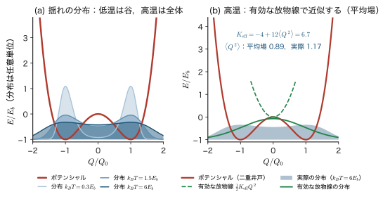
次に $\langle u^2\rangle_T$ を決める．結晶では，4 次の項は 1 つの原子の変位 $u_l$ について局所的に効くので，$\langle u_l^2\rangle$ には すべてのモードの揺れ が寄与する．ソフトモード自身はそのうちの 1 つにすぎず，大部分は振動数の実な（安定な）多数のモードからの寄与である．その典型的な振動数を $\bar\omega$ とすると，30.3 節と同じ調和振動子の揺れから
$$ \langle u^2\rangle_T\simeq\frac{\hbar}{2M\bar\omega}\coth\frac{\hbar\bar\omega}{2k_BT}\;\xrightarrow{\ k_BT\gg\hbar\bar\omega\ }\;\frac{k_BT}{M\bar\omega^2} $$である．古典的な高温の極限を式 \eqref{eq:30-scp} に入れると
となる．ソフトモードの $\omega^2$ は温度に比例して増え，$T_c$ で 0 を横切る（第29章 29.3.4 項のソフトモードの式と，第19章の Cochran 則の起源）．$T\gt T_c$ では高対称構造が揺れながら平均として安定，$T\lt T_c$ では有効な $\omega^2$ が負になり，対称性の低い構造へ転移する．$T_c$ は，二重井戸の深さ（$\abs{\omega_0^2}$）が大きいほど高く，4 次の壁（$\Phi^{(4)}$）が硬いほど低い．
30.8.3 量子ゆらぎ — 量子常誘電
低温では $\langle u^2\rangle$ は 0 にならず，零点振動の値 $\hbar/2M\bar\omega$ で止まる．$T_c^{\rm cl}$ を式 \eqref{eq:30-cochran} の古典的な転移温度，$\theta\equiv\hbar\bar\omega/2k_BT_c^{\rm cl}$ とおくと，式 \eqref{eq:30-scp} は
$$ \frac{\omega^2(T)}{\abs{\omega_0^2}}=-1+\theta\coth\Bigl(\theta\,\frac{T_c^{\rm cl}}{T}\Bigr) $$と書ける（$\frac{\Phi^{(4)}}{2M}\cdot\frac{\hbar}{2M\bar\omega}=\abs{\omega_0^2}\theta$ を使った．古典の極限 $\coth y\to1/y$ で $-1+T/T_c^{\rm cl}$ に戻る）．$\coth\ge1$ なので，$\theta\ge1$ なら $\omega^2$ はどの温度でも負にならず，転移は起こらない（図30.25）．零点振動だけで原子が二重井戸の山を越えて揺れているのである．これが 量子常誘電（quantum paraelectricity）で，$\mathrm{SrTiO_3}$ の極性モードや $\mathrm{KTaO_3}$ では，誘電率が低温で非常に大きくなるのに強誘電転移が起こらない（Müller と Burkard 1979）．$\theta\lt1$ でも，量子ゆらぎは転移温度を下げ，0 K 近くで $\omega^2(T)$ の直線を寝かせる．
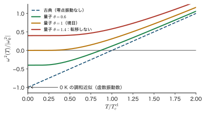
例題30.16 虚数振動数と 4 次の力定数から転移温度を見積もる
ある立方晶ペロブスカイトの 0 K の調和計算で，Ti（質量 $47.87\,\mathrm{u}$）がほぼ単独で動く極性モードに $\nu_0=6i\,\mathrm{THz}$ の虚数振動数が出た（第29章 例題29.6 と同じ値）．このモードの方向の 4 次の力定数を $\Phi^{(4)}=2.0\times10^{3}\,\mathrm{eV/\text{Å}^4}$（第29章の $\tfrac14BQ^4$ の書き方では $B=\Phi^{(4)}/6=3.3\times10^2\,\mathrm{eV/\text{Å}^4}$），揺れに寄与する安定なモードの典型的な振動数を $\bar\nu=5\,\mathrm{THz}$ とする（模型の値）．(1) 古典の転移温度 $T_c^{\rm cl}$ を求めよ．(2) $\theta$ を求め，零点振動を入れた転移温度を求めよ．(3) 0 K での $\omega^2/\abs{\omega_0^2}$ を求めよ．
解答．(1) $M=7.949\times10^{-26}\,\mathrm{kg}$，$\abs{\omega_0^2}=(2\pi\times6\times10^{12})^2=1.421\times10^{27}\,\mathrm{s^{-2}}$，$\bar\omega=2\pi\times5\times10^{12}=3.142\times10^{13}\,\mathrm{s^{-1}}$，$\Phi^{(4)}=2.0\times10^3\,\mathrm{eV/\text{Å}^4}=3.204\times10^{24}\,\mathrm{J/m^4}$（$1\,\mathrm{eV/\text{Å}^4}=1.602\times10^{-19}\,\mathrm{J}/10^{-40}\,\mathrm{m^4}$）．式 \eqref{eq:30-cochran} より
$$ T_c^{\rm cl}=\frac{2M^2\bar\omega^2\abs{\omega_0^2}}{\Phi^{(4)}k_B}=\frac{2\times(7.949\times10^{-26})^2\times(3.142\times10^{13})^2\times1.421\times10^{27}}{3.204\times10^{24}\times1.381\times10^{-23}}\,\mathrm{K}=401\,\mathrm{K} $$（分子：$M^2\bar\omega^2=6.236\times10^{-24}$，$\times2\times1.421\times10^{27}=1.772\times10^4$．分母：$44.25$．）(2)
$$ \theta=\frac{\hbar\bar\omega}{2k_BT_c^{\rm cl}}=\frac{1.0546\times10^{-34}\times3.142\times10^{13}}{2\times1.381\times10^{-23}\times401}=0.30 $$転移温度は $\theta\coth(\theta T_c^{\rm cl}/T)=1$，すなわち $\tanh(\theta T_c^{\rm cl}/T)=\theta$ から
$$ T=\frac{\theta\,T_c^{\rm cl}}{\mathrm{artanh}\,\theta}=\frac{0.30\times401}{0.3095}\,\mathrm{K}=388\,\mathrm{K} $$(3) $-1+\theta=-0.70$．
∎ この模型では零点振動が転移温度を約 3 % 下げ，0 K でもソフトモードの $\omega^2$ を 30 % 押し上げる．Ti のような重い原子と $\bar\nu=5\,\mathrm{THz}$ では量子効果は小さいが，軽い原子（水素など）が関わる転移や，二重井戸の浅い物質では $\theta$ が 1 に近づき，量子ゆらぎが転移の有無を決める．
第29章 例題29.6 との関係：そこでは谷の位置 $Q_0=0.10\,\text{Å}$ から $B=M\abs{\omega_0^2}/Q_0^2=7.05\times10^2\,\mathrm{eV/\text{Å}^4}$，すなわち $\Phi^{(4)}=6B=4.2\times10^3\,\mathrm{eV/\text{Å}^4}$ を得た．本例題の $\Phi^{(4)}$ はその約半分（谷が $\sqrt2$ 倍遠い $Q_0=0.14\,\text{Å}$ の井戸）に選んである．例題29.6 の値を使うと，$\Phi^{(4)}=6M\abs{\omega_0^2}/Q_0^2$ を式 \eqref{eq:30-cochran} に入れた $T_c^{\rm cl}=M\bar\omega^2Q_0^2/3k_B$ から $T_c^{\rm cl}=189\,\mathrm{K}$，$\theta=0.63$，零点振動を入れた転移温度は $161\,\mathrm{K}$ になる．4 次の壁が硬い（谷が近い）ほど転移温度は低く，量子効果は大きい（谷が浅くなるため）．
動かして確かめる：二重井戸，ソフトモード，量子ゆらぎ
シミュレーター「超伝導」のタブ ④「虚数振動数を有するフォノン」は，二重井戸の模型 $E(Q)=\frac12A(T-T_0)Q^2+\frac14BQ^4$ を動かすものである（図30.24，図30.25 に対応）．右の「秩序パラメーターの成分数」は 「Z₂（1 成分）」のまま にする（これが本節の二重井戸である．「U(1)（2 成分）」や「動かしてみる」の「振幅モード（Higgs）」「位相モード（Goldstone）」は超伝導との対応を見るためのもので，本節では使わない）．まず「温度 $T/T_0$」のつまみを動かして，ポテンシャルの形と振動数の 2 乗のグラフが連動して変わることを見る．次に「量子ゆらぎ $T_1/T_0$」の下のボタンを「古典（0）」→「少し効く」→「SrTiO₃ 相当」の順に押すと，低温で $\omega^2$ の直線が寝て，最後には転移が起こらなくなる（量子常誘電）．
シミュレーターと本節の記号の対応は次のとおりである．シミュレーターの $T_0$ は本節の古典の転移温度 $T_c^{\rm cl}$，$T_1$ は $\hbar\bar\omega/k_B$ にあたり，本節の $\theta=\hbar\bar\omega/2k_BT_c^{\rm cl}$ は $\theta=T_1/2T_0$ である．したがって「少し効く」（$T_1/T_0=1.2$）は図30.25 の $\theta=0.6$，「SrTiO₃ 相当」（$T_1/T_0=2.1$）は $\theta=1.05$ にあたる．シミュレーターの「$T_1/2\gt T_0$ なら転移しない」は，本節の「$\theta\ge1$ なら転移しない」と同じ内容である．同じタブは第29章 29.3.4 項でも使った．
30.8.4 自己無撞着フォノン，TDEP，SSCHA — 有限温度のフォノンを計算する
式 \eqref{eq:30-scp} の $\langle u^2\rangle$ は，本来は温度でくりこまれた振動数 $\omega(T)$ で計算すべきものである．振動数が揺れを決め，揺れが振動数を決めるので，両者を 自己無撞着に（つじつまが合うまで繰り返して）決める必要がある．これを結晶の全モードについて行うのが 自己無撞着フォノン（self-consistent phonon，SCP）の方法である．
- 適当な振動数 $\omega_\lambda$ から始め，その振動数の調和振動子の揺れ $\langle u_l^2\rangle$（$\coth$ を含む量子的な値）を計算する．
- 4 次の力定数を揺れで平均して（式 \eqref{eq:30-scp} の一般化），有効な 2 次の力定数を作り，振動数を計算し直す．
- 振動数が変わらなくなるまで繰り返す．
図の言葉では，loop の輪の中の線を「くりこまれた線」に置き換えて繰り返すことにあたる．これと関連して，次の方法が使われている（図30.26）．
- 確率的自己無撞着調和近似（SSCHA）：自由エネルギーを最小にする有効な調和ハミルトニアンを，変分原理で求める．調和振動子の分布に従って原子をランダムにずらした多数の配置で力を計算し（確率的な標本），量子的な零点振動も含めて有効な力定数と原子の平均位置を最適化する（Errea，Calandra，Mauri 2014）．
- 温度依存有効ポテンシャル（TDEP）：その温度の分子動力学（第一原理 MD）で得られた変位と力の組に，最小 2 乗法で調和の（必要なら 3 次の）力定数を当てはめる．当てはめた力定数は，その温度で原子が実際に感じている平均的なバネを表す（Hellman，Abrikosov，Simak 2011）．
- SCP（逆格子空間）：上の 1〜3 を，第一原理で求めた 4 次の力定数で行う．$\mathrm{SrTiO_3}$ の立方晶のソフトモードの温度変化が計算されている（Tadano と Tsuneyuki 2015）．
どの方法も，「0 K の調和近似で虚数振動数を有するフォノンをもつ構造が，揺れによって有限温度で安定化する」ことを定量的に扱える．得られた温度依存の力定数を 30.7 節の熱伝導率の計算に使うこともできる．考え方の比較と 1 自由度の例は，姉妹編『線形応答理論』第15章 15.2 節（手法の地図）と15.4 節（1 自由度で手を動かす）にある．
補足：体心立方の Ti，Zr と，エントロピーによる安定化
Ti や Zr の高温の体心立方相では，0 K の調和計算でブリルアン域の一部の横波音響フォノンに虚数振動数が現れる．高温では原子の大きな揺れがこのモードを本節の機構で安定化させる．同時に，振動数の低いモードを多くもつ構造は振動のエントロピーが大きいので，自由エネルギー $F=E-TS$ の $-TS$ の項が高温で有利に働く．低温の六方最密相から高温の体心立方相への転移は，この両方が効いた例である．
30.9 まとめと演習
30.9.1 まとめ
- 調和近似では，熱膨張が無い，熱伝導率が無限大，振動数が温度によらない，線幅が 0，$C_p=C_V$，高温の比熱が $3Nk_B$ のまま，$B_S=B_T$，という 7 つのことが成り立ってしまう．すべてポテンシャルの 3 次・4 次の項（非調和項）で解決する（表30.1）．
- 原子対ポテンシャルの 3 次の力定数は負（縮む側が急）で，$\abs{\Phi^{(3)}}r_0/\Phi^{(2)}$ は 10〜20 程度．非調和性の強さの目安は $\langle u^2\rangle^{1/2}/a$ で，融点で約 0.1（Lindemann）．
- 変位を $a+a^\dagger$ で書くと，3 次の項は 1 個 ⇄ 2 個の 3 フォノン過程，4 次の項は 4 フォノン過程を表す．保存則は $\omega=\omega_1+\omega_2$，$\qq=\qq_1+\qq_2+\GG$（$\GG=0$ が N 過程，$\GG\ne0$ が U 過程）．保存則を満たす組の数（位相空間）は分散の形で決まり，単原子の 1 次元鎖では 0，音響と光学の隙間が大きい物質では小さい．
- 熱平衡で力の平均は 0 なので，非調和振動子の平均位置は $\langle x\rangle=\frac{3g}{2c}\langle x^2\rangle\propto\coth(\hbar\omega/2k_BT)$．零点振動でも膨張し，膨張率は比熱に比例して低温で凍結する．図では tadpole の上半分（輪 × 頂点 × 尾）で，符号は頂点で決まる．
- 準調和近似では $\alpha_V=\frac{1}{B_TV}\sum_\lambda\gamma_\lambda c_\lambda$．Grüneisen 定数は 3 次と 2 次の力定数の比（1 次元鎖で $-a\Phi^{(3)}/2\Phi^{(2)}$）．$\gamma_\lambda\lt0$ の横揺れ（張った弦，剛体ユニットモード）が比熱の重みで勝つと負の熱膨張になる（$\mathrm{ZrW_2O_8}$，$\mathrm{ScF_3}$，低温の Si）．熱膨張で結合がゆるい側へ移るので，体積弾性率は $B_T\simeq B_0[1-B_0'\Delta V/V_0]$ で高温ほど下がる．
- Fermi の黄金律から 3 フォノン過程の線幅は $\Gamma_\lambda\propto\sum\abs{\Psi}^2[(1+n_1+n_2)\delta_{\rm 分裂}$ $+2(n_1-n_2)\delta_{\rm 合体}]$（式 \eqref{eq:30-Gamma}）．「1」は 0 K の自発的な分裂．高温で $\Gamma\propto T$，4 フォノン過程で $T^2$．
- Klemens の過程（光学 → 音響＋音響）で $\Gamma(T)=\Gamma_0[1+2n(\omega_0/2)]$．線幅（半値半幅）$\Gamma$ と寿命は $\tau=1/2\Gamma$，波数の半値全幅からは $\tau=1/(2\pi c\tilde\nu_{\rm FWHM})=5.31\,\mathrm{ps}/(\tilde\nu_{\rm FWHM}/\mathrm{cm^{-1}})$．Si の光学フォノンの寿命は低温で約 4 ps，室温で約 2 ps．
- 振動数の温度変化は，体積の効果（準調和，tadpole）と体積一定の効果（loop と bubble）の和．1 自由度では $\Delta\omega=[6f/M\omega-9g^2/M^2\omega^3-6g^2/M^2\omega^3]\langle x^2\rangle$ で，Morse 型では 3 次の 2 つの図が勝って下がる．同じ非調和項が高温の比熱を Dulong–Petit の値からずらし，古典極限では $C/k_B-1=-\Delta\omega/\omega$（Morse で $C=k_B(1+k_BT/D)$）．
- Boltzmann 方程式の緩和時間近似で $\kappa=\frac1{3V}\sum_\lambda c_\lambda v_\lambda^2\tau_\lambda$．散乱率は Matthiessen 則で足す（U 過程 $\propto\omega^2T\ee^{-\Theta_D/bT}$，同位体 $\propto\omega^4$，境界 $v/L$）．$\kappa(T)$ は低温で $T^3L$，山を経て，高温で $1/T$．
- 熱伝導率が高い条件は軽い原子・強い結合・単純な構造・弱い非調和性・同位体の純度（ダイヤモンド，BAs），低くする設計は重い原子・強い非調和性・ラットリング・ナノ構造（熱電材料）．第一原理計算では $\Phi^{(2)},\Phi^{(3)}$ → $\Gamma_\lambda$ → $\kappa$（phono3py，ShengBTE，ALAMODE）．
- 0 K で虚数振動数を有するフォノンをもつ構造は，4 次の項を揺れで平均した $\omega^2(T)=\omega_0^2+\Phi^{(4)}\langle u^2\rangle_T/2M$ によって高温で安定化し，ソフトモードは $\omega^2\propto T-T_c$．零点振動が強いと転移しない（量子常誘電）．計算には SCP，SSCHA，TDEP を使う．
30.9.2 演習問題
演習30.1 NaCl の $C_p-C_V$ と $B_S/B_T$
NaCl の室温の値（線膨張率 $39.5\times10^{-6}\,\mathrm{K^{-1}}$，$B_T=24\,\mathrm{GPa}$，モル体積 $27.0\times10^{-6}\,\mathrm{m^3/mol}$，$C_V\simeq50\,\mathrm{J\,mol^{-1}K^{-1}}$）から，$C_p-C_V$，$C_p/C_V$，Grüneisen 定数 $\gamma$，$B_S/B_T$ を求めよ．Cu（例題30.1）と比べて差が大きい理由を述べよ．
ヒント：$\alpha_V=3\alpha$．$C_p-C_V=\alpha_V^2B_TVT=2.73\,\mathrm{J\,mol^{-1}K^{-1}}$（5.5 %），$\gamma=1.54$，$B_S/B_T=C_p/C_V=1.055$．熱膨張率が Cu の 2.4 倍と大きいため．
演習30.2 Lennard-Jones 結晶の Grüneisen 定数の見積もり
例題30.2 の Lennard-Jones の力定数を使い，30.4.3 項の考え方で，(1) 1 次元の鎖の $\gamma_{\rm 1D}$，(2) すべての結合が等方的に伸びる 3 次元の見積もり $\gamma\simeq-r_0\Phi^{(3)}/6\Phi^{(2)}$ を求めよ．(3) Morse 型（Cu の例）より大きい理由を，ポテンシャルの形から述べよ．
ヒント：$\Phi^{(3)}r_0/\Phi^{(2)}=-21$．(1) 10.5，(2) 3.5．(3) 斥力の $r^{-12}$ が急なので，つり合いの近くの非対称が Morse（$\alpha r_0\simeq3.9$）より強い．
演習30.3 線幅の式の高温の極限
式 \eqref{eq:30-Gamma} の分裂の因子 $1+n_1+n_2$（$\omega=\omega_1+\omega_2$）と合体の因子 $n_1-n_2$（$\omega_2=\omega+\omega_1$）を，$k_BT\gg\hbar\omega_i$ で展開し，どちらも $k_BT\omega/\hbar\omega_1\omega_2$ の形（合体では $\omega_1\omega_2$ は吸収する相手とできるフォノンの振動数）になることを示せ．これから高温で $\Gamma\propto T$ となることを確かめよ．
ヒント：$n_i\simeq k_BT/\hbar\omega_i-\tfrac12$．分裂：$1+n_1+n_2\simeq\frac{k_BT}{\hbar}\bigl(\frac1{\omega_1}+\frac1{\omega_2}\bigr)=\frac{k_BT}{\hbar}\frac{\omega}{\omega_1\omega_2}$．合体：$n_1-n_2\simeq\frac{k_BT}{\hbar}\frac{\omega_2-\omega_1}{\omega_1\omega_2}=\frac{k_BT}{\hbar}\frac{\omega}{\omega_1\omega_2}$．
演習30.4 ダイヤモンドの Raman 線の Klemens の因子
ダイヤモンドの光学フォノンの Raman 線は $1332\,\mathrm{cm^{-1}}$ にある．Klemens の過程だけを考えて，$300\,\mathrm{K}$ と $1000\,\mathrm{K}$ の $1+2n(\omega_0/2)$ を求めよ．Si（$300\,\mathrm{K}$ で 1.81）と比べて，ダイヤモンドの線幅の温度変化が室温まで小さい理由を述べよ．
ヒント：$\tilde\nu_0/2=666\,\mathrm{cm^{-1}}=82.6\,\mathrm{meV}$．$300\,\mathrm{K}$ で $x=3.19$，$1+2n=1.086$；$1000\,\mathrm{K}$ で $x=0.958$，$1+2n=2.24$．崩壊先の音響フォノンの振動数が高く，室温ではほとんど熱的に励起されていない．
演習30.5 低温の熱伝導率の積分
$\displaystyle\int_0^\infty\frac{x^4\ee^x}{(\ee^x-1)^2}\dd x=\frac{4\pi^4}{15}$ を示せ．$\displaystyle\int_0^\infty\frac{x^3}{\ee^x-1}\dd x=\frac{\pi^4}{15}$（第14章 14.3.5 項）を使ってよい．これを使って，30.7.3 項の境界散乱の極限の式と $\frac13CvL$ が一致することを確かめよ．
ヒント：$\frac{\ee^x}{(\ee^x-1)^2}=-\frac{\dd}{\dd x}\frac{1}{\ee^x-1}$ として部分積分すると $\int_0^\infty\frac{4x^3}{\ee^x-1}\dd x=\frac{4\pi^4}{15}$（境界の項は 0）．
演習30.6 量子常誘電になる条件
例題30.16 の模型で，ほかの値はそのままにして 4 次の力定数 $\Phi^{(4)}$ だけを変える．(1) $\theta$ が $\Phi^{(4)}$ に比例することを示せ．(2) 転移が起こらなくなる $\Phi^{(4)}$ を求めよ．(3) 二重井戸の谷の深さ $E_b=\frac{3M^2\omega_0^4}{2\Phi^{(4)}}$ を $\Phi^{(4)}$ がその値のときに求め，零点振動のエネルギー $\hbar\bar\omega/2$ と比べよ．
ヒント：(1) $T_c^{\rm cl}\propto1/\Phi^{(4)}$ なので $\theta=\hbar\bar\omega/2k_BT_c^{\rm cl}\propto\Phi^{(4)}$．(2) $\theta=1$ から $\Phi^{(4)}=2.0\times10^3/0.30\simeq6.7\times10^3\,\mathrm{eV/\text{Å}^4}$．(3) $E_b\simeq11\,\mathrm{meV}$（$\Phi^{(4)}=2.0\times10^3$ のときは 37 meV），$\hbar\bar\omega/2=10.3\,\mathrm{meV}$：井戸の深さが零点振動のエネルギーと同じ程度まで浅くなると，零点振動だけで山を越えて揺れる．
演習30.7 単原子の 1 次元鎖では 3 フォノン過程が起こらない
$\omega(q)=\omega_m\abs{\sin(qa/2)}$ の単原子鎖で，(1) 分裂 $\omega(q)=\omega(q_1)+\omega(q-q_1+G)$ も，(2) 合体 $\omega(q)+\omega(q_1)=\omega(q+q_1+G)$ も，自明な場合（振動数 0 のフォノンが関わる場合）を除いて解が無いことを示せ．(3) 3 次元の結晶ではなぜ 3 フォノン過程が起こるのか，分枝の数の言葉で説明せよ．
ヒント：$\abs{\sin(A+B)}\le\abs{\sin A}+\abs{\sin B}$ で，等号は $\sin A=0$ か $\sin B=0$ のときだけ．$\omega$ は $G$ の分だけずらしても同じ．(3) 速さの違う LA と TA の分枝があると，LA → TA＋TA や LA＋TA → LA のように異なる分枝のあいだで保存則が満たせる．
参考文献
- N. W. Ashcroft and N. D. Mermin, Solid State Physics, Saunders (1976)，第25章 —— 調和近似の限界（30.1 節），熱膨張と Grüneisen（30.4 節），格子熱伝導（30.7 節）．
- C. Kittel, Introduction to Solid State Physics, 8th ed., Wiley (2005)，第5章 —— 非調和性と熱伝導の初等的な説明，熱伝導率の値（30.7 節）．
- J. M. Ziman, Electrons and Phonons, Oxford University Press (1960) —— フォノンの Boltzmann 方程式，N 過程と U 過程（30.2，30.7 節）．
- G. P. Srivastava, The Physics of Phonons, Adam Hilger (1990) —— 3 フォノン過程の行列要素と線幅，熱伝導率の模型（30.2，30.5，30.7 節）．
- M. Born and K. Huang, Dynamical Theory of Crystal Lattices, Oxford University Press (1954) —— 力定数による展開と準調和近似（30.2，30.4 節）．
- R. Peierls, Ann. Phys. (Leipzig) 3, 1055 (1929) —— U 過程と格子熱伝導の Boltzmann 方程式（30.2，30.7 節）．
- A. A. Maradudin and A. E. Fein, Phys. Rev. 128, 2589 (1962)；R. A. Cowley, Adv. Phys. 12, 421 (1963) —— 非調和結晶の振動数のずれと線幅の摂動論（30.5，30.6 節）．
- P. G. Klemens, Phys. Rev. 148, 845 (1966) —— 光学フォノンの 2 個の音響フォノンへの崩壊（30.5 節）．同位体による散乱の $\omega^4$ の式も Klemens による（30.7 節）．
- M. Balkanski, R. F. Wallis, and E. Haro, Phys. Rev. B 28, 1928 (1983) —— Si の光学フォノンの線幅と振動数の温度変化，3 フォノンと 4 フォノンの当てはめ（図30.16，図30.18，例題30.10・30.12）．
- J. Callaway, Phys. Rev. 113, 1046 (1959) —— Debye 型の熱伝導率の模型と N 過程の扱い（30.7 節）．
- T. A. Mary, J. S. O. Evans, T. Vogt, and A. W. Sleight, Science 272, 90 (1996) —— $\mathrm{ZrW_2O_8}$ の広い温度域の負の熱膨張（30.4 節）．
- A. Togo and I. Tanaka, Scr. Mater. 108, 1 (2015) —— phonopy と準調和近似の計算（30.4 節）．
- A. Togo, L. Chaput, and I. Tanaka, Phys. Rev. B 91, 094306 (2015) —— phono3py：3 次の力定数による線幅と熱伝導率（30.5，30.7 節）．
- W. Li, J. Carrete, N. A. Katcho, and N. Mingo, Comput. Phys. Commun. 185, 1747 (2014) —— ShengBTE（30.7 節）．
- T. Tadano, Y. Gohda, and S. Tsuneyuki, J. Phys.: Condens. Matter 26, 225402 (2014)；T. Tadano and S. Tsuneyuki, Phys. Rev. B 92, 054301 (2015) —— ALAMODE と，$\mathrm{SrTiO_3}$ の自己無撞着フォノン計算（30.7，30.8 節）．
- L. Lindsay, D. A. Broido, and T. L. Reinecke, Phys. Rev. Lett. 111, 025901 (2013)；T. Feng, L. Lindsay, and X. Ruan, Phys. Rev. B 96, 161201(R) (2017)；J. S. Kang, M. Li, H. Wu, H. Nguyen, and Y. Hu, Science 361, 575 (2018)；同じ号の S. Li ら（p. 579），F. Tian ら（p. 582）—— BAs の高い熱伝導率の予言，4 フォノン過程による予言の修正，測定（30.7 節）．
- O. Hellman, I. A. Abrikosov, and S. I. Simak, Phys. Rev. B 84, 180301(R) (2011)；I. Errea, M. Calandra, and F. Mauri, Phys. Rev. B 89, 064302 (2014) —— TDEP と SSCHA（30.8 節）．
- K. A. Müller and H. Burkard, Phys. Rev. B 19, 3593 (1979) —— $\mathrm{SrTiO_3}$ の量子常誘電（30.8 節）．
- 姉妹編『線形応答理論』第14章（フォノン間相互作用），第15章（有限温度のフォノン），付録E（負の熱膨張）；シミュレーター thermal-expansion，superconductivity，thermoelectric とその解説ページ —— ファインマン図による計算と，本章の図の読み方（30.3〜30.6，30.8 節）．